5. AI Vision Course
5.1 Single Color Recognition
5.1.1 Program Description
The implementation of color recognition consists of two parts: color detection and execution feedback after recognition.
First, for the color detection part, Gaussian filtering is applied to the image to reduce noise. The Lab color space is then used to convert the color of the object .
Next, the object’s color within the circle is recognized using color thresholding, followed by masking (masking involves using selected images, shapes, or objects to globally or locally obscure the image being processed).
After performing morphological operations such as opening and closing on the object image, the object with the largest contour is circled.
Opening: The image undergoes erosion followed by dilation. This operation removes small objects, smooths shape boundaries, and preserves the area. It can eliminate small noise particles and separate connected objects.
Closing: The image undergoes dilation followed by erosion. This operation fills small holes within objects, connects nearby objects, closes broken contour lines, and smooths boundaries while preserving the area.
After recognition, the servo and buzzer are set up to provide feedback based on the detected color. For example, when red is detected, the buzzer will emit a sound.
For detailed feedback behavior, please refer to section 3. Function Implementation of this document.
5.1.2 Start and Close the Game
Note
The input command is case-sensitive, and keywords can be auto-completed using the Tab key.
(1) Power on the device and, following the instructions in “3. Remote Desktop Tool Installation and Connection->3.1 Remote Tool Installation and Connection”, use the VNC remote connection tool to connect.
(2) Click the icon  in the top left corner of the system desktop to open the LX terminal.
in the top left corner of the system desktop to open the LX terminal.
(3) Execute the command to navigate to the directory where the program is located, then press Enter:
cd TonyPi/Functions
(4) Enter the command and press Enter to start the program:
python3 Color_Warning.py
(5) To close the program, simply press “Ctrl+C” in the LX terminal. If it does not close, press it multiple times.
5.1.3 Program Outcome
After starting the game, the camera will be used to detect colors. When a red ball is recognized, the buzzer will emit a beep sound, and the ball will be circled in the transmitted image, with “Color: red” printed.
Note
During the recognition process, ensure the environment is well-lit to avoid inaccurate recognition due to poor lighting conditions.
Ensure that no objects with similar or matching colors to the target are present in the background within the camera’s visual range, as this may cause misrecognition.
If color recognition is inaccurate, refer to the section “5.1.5 Function Extensions” in this document to adjust the color threshold settings.
5.1.4 Program Analysis
Import Function Library
3 4 5 6 7 8 9 10 11 12 13 14 15 16 17 | import sys import os import cv2 import math import time import threading import numpy as np import hiwonder.Camera as Camera import hiwonder.Misc as Misc import hiwonder.ros_robot_controller_sdk as rrc import hiwonder.yaml_handle as yaml_handle # 初始化机器人底层驱动(initial robot underlying drivers) board = rrc.Board() |
| Imported Module | Purpose |
|---|---|
import sys |
Imports Python's sys module, used for accessing system-specific parameters and functions. |
import os |
Imports Python's os module, which provides functions for interacting with the operating system. |
import cv2 |
Imports the OpenCV library, used for image processing and computer vision functionalities. |
import time |
Imports Python's time module, used for time-related operations such as delays. |
import threading |
Provides a multithreading environment for concurrent execution. |
import numpy as np |
Imports the NumPy library, an open-source numerical computation library for handling arrays and matrix operations. |
import hiwonder.Camera as Camera |
Imports the camera module from the Hiwonder library. |
import hiwonder.Misc as misc |
Imports the Misc module, used for processing detected rectangular data. |
import hiwonder.ros_robot_controller_sdk as rrc |
Imports the low-level robot control SDK for managing servos, motors, RGB lights, and other hardware. |
import hiwonder.yaml_handle as yaml_handle |
Contains functions and tools related to handling YAML-formatted files. |
(1) Import Libraries for OpenCV, Time, Math, and Threading
To use functions from a library, we can call them with the syntax:
library_name.function_name(parameter1, parameter2, …)
62 63 64 65 66 67 68 69 | while True: if detect_color == 'red' and di_once: board.set_buzzer(1900, 0.1, 0.9, 1) # 以1900Hz的频率，持续响0.1秒，关闭0.9秒，重复1次(at a frequency of 1900Hz, sound for 0.1 seconds, then pause for 0.9 seconds, repeat once) di_once = False elif not di_once and detect_color != 'red': di_once = True else: time.sleep(0.01) |
For example, to call the sleep function from the time library, we use:
In Python, several libraries like time, cv2, and math are built-in and can be directly imported and used. You can also create your own libraries, like the “yaml_handle” file-reading library mentioned above.
(2) Instantiate a Library
Some library names can be long and hard to remember. To simplify function calls, we often instantiate libraries. For example:
16 17 | # 初始化机器人底层驱动(initial robot underlying drivers) board = rrc.Board() |
Once instantiated, functions from the ros_robot_controller_sdk library can be conveniently called using the format rrc.function_name(parameter1, parameter2, ...).
44 45 46 47 48 | def load_config(): global lab_data, servo_data lab_data = yaml_handle.get_yaml_data(yaml_handle.lab_file_path) servo_data = yaml_handle.get_yaml_data(yaml_handle.servo_file_path) |
Main Function Analysis
In a Python program, __name__ == '__main__' indicates the main function of the program, where the program starts by reading an image.
(1) Read Live Camera Feed
156 157 158 159 160 161 162 163 164 165 166 167 | while True: ret, img = my_camera.read() if img is not None: frame = img.copy() frame = cv2.remap(frame, mapx, mapy, cv2.INTER_LINEAR) # 畸变矫正(distortion correction) Frame = run(frame) cv2.imshow('Frame', Frame) key = cv2.waitKey(1) if key == 27: break else: time.sleep(0.01) |
(2) Start Image Processing
When an image is received, the “run()” function is called to process it.
76 77 78 79 80 81 82 | def run(img): global draw_color global color_list global detect_color img_copy = img.copy() img_h, img_w = img.shape[:2] |
① The img.copy() function creates a duplicate of the img object and assigns it to frame.
② The “run()” function handles the image processing operations.
161 | Frame = run(frame) |
(3) Resizing the Image. The image size is resized to facilitate processing.
84 | frame_resize = cv2.resize(img_copy, size, interpolation=cv2.INTER_NEAREST) |
The first parameter "img_copy" is the input image.
The second parameter size specifies the output image size, which can be customized.
The third parameter interpolation=cv2.INTER_NEAREST defines the interpolation method.
INTER_NEAREST: Nearest-neighbor interpolation.
INTER_LINEAR: Bilinear interpolation (default if not specified).
INTER_CUBIC: Bicubic interpolation over a 4x4 pixel neighborhood.
INTER_LANCZOS4: Lanczos interpolation over an 8x8 pixel neighborhood.
(4) Gaussian Filtering
Images often contain noise, which can degrade quality and obscure important features. Depending on the type of noise, different filtering methods may be used, such as Gaussian filtering, median filtering, and mean filtering.
Gaussian filtering is a type of linear smoothing filter that is effective in reducing Gaussian noise. It is widely used in image denoising processes.
85 | frame_gb = cv2.GaussianBlur(frame_resize, (3, 3), 3) |
The first parameter, frame_resize, is the input image.
The second parameter, (3, 3), specifies the size of the Gaussian kernel.
The third parameter, 3, represents the standard deviation of the Gaussian kernel in the X direction.
(5) Convert the Image to LAB Color Space
The cv2.cvtColor() function is used for color space conversion.
86 | frame_lab = cv2.cvtColor(frame_gb, cv2.COLOR_BGR2LAB) # 将图像转换到LAB空间(convert the image to the LAB space) |
The first parameter “frame_gb” is the input image.
The second parameter cv2.COLOR_BGR2LAB converts the image from BGR format to LAB format. To convert to RGB, use cv2.COLOR_BGR2RGB.
(6) Convert the Image to a Binary Image
The image is simplified by converting it to a binary image, containing only 0s and 1s, which reduces the data size and makes it easier to process. The cv2.inRange() function is used for thresholding.
94 95 96 97 98 99 100 | frame_mask = cv2.inRange(frame_lab, (lab_data[i]['min'][0], lab_data[i]['min'][1], lab_data[i]['min'][2]), (lab_data[i]['max'][0], lab_data[i]['max'][1], lab_data[i]['max'][2])) #对原图像和掩模进行位运算(perform bitwise operation to original image and mask) |
The first parameter "frame_lab" is the input image.
The second parameter (lab_data[i]['min'][0], lab_data[i]['min'][1], lab_data[i]['min'][2]) specifies the lower color threshold.
The third parameter (lab_data[i]['max'][0], lab_data[i]['max'][1], lab_data[i]['max'][2]) specifies the upper color threshold.
Apply Morphological Operations (Opening and Closing)
To reduce interference and smooth the image, morphological operations are applied. Opening is erosion followed by dilation, and closing is dilation followed by erosion. The cv2.morphologyEx() function is used.
101 102 | eroded = cv2.erode(frame_mask, cv2.getStructuringElement(cv2.MORPH_RECT, (3, 3))) #腐蚀(corrosion) dilated = cv2.dilate(eroded, cv2.getStructuringElement(cv2.MORPH_RECT, (3, 3))) #膨胀(dilation) |
The first parameter is the input image.
The second parameter is the structuring element (also known as the kernel), which defines the nature of the operation. The size and shape of the kernel determine the extent of erosion or dilation.
(7) Find the Largest Contour
After completing the image processing, the largest contour is found using the cv2.findContours() function.
103 104 | contours = cv2.findContours(dilated, cv2.RETR_EXTERNAL, cv2.CHAIN_APPROX_NONE)[-2] #找出轮廓(find out contours) areaMaxContour, area_max = getAreaMaxContour(contours) #找出最大轮廓(find out the contour with the maximal area) |
The first parameter "dilated" is the input image.
The second parameter cv2.RETR_EXTERNAL specifies the contour retrieval mode.
The third parameter cv2.CHAIN_APPROX_NONE)[-2] specifies the contour approximation method.
The largest contour is selected, and a minimum area threshold is set to ensure the target contour is valid only if its area exceeds this value.
29 30 31 32 33 34 35 36 37 38 39 40 41 42 43 | # 找出面积最大的轮廓(find out the contour with the maximal area) # 参数为要比较的轮廓的列表(parameter is the list to be compared) def getAreaMaxContour(contours): contour_area_temp = 0 contour_area_max = 0 areaMaxContour = None for c in contours: # 历遍所有轮廓(iterate through all contours) contour_area_temp = math.fabs(cv2.contourArea(c)) # 计算轮廓面积(calculate contour area) if contour_area_temp > contour_area_max: contour_area_max = contour_area_temp if contour_area_temp > 50: # 只有在面积大于50时，最大面积的轮廓才是有效的，以过滤干扰(only contours with an area greater than 50 are considered valid; the contour with the largest area is used to filter out interference) areaMaxContour = c return areaMaxContour, contour_area_max # 返回最大的轮廓(return the contour with the maximal area) |
(8) Display the Result
162 163 | cv2.imshow('Frame', Frame) key = cv2.waitKey(1) |
The function cv2.resize() is used to scale the processed image to an appropriate size.
The function cv2.imshow() displays the image in a window. ‘Frame’ is the name of the window, and Frame is the image content to be displayed. This function must be followed by cv2.waitKey(), otherwise the image will not appear.
The function cv2.waitKey() waits for a key press. The parameter 1 specifies the delay time in milliseconds.
Child Thread Analysis
(1) Turn On RGB Light
The RGB light will match the color detected by the recognition system.
118 119 120 121 122 123 124 125 126 | if color_area_max == 'red': #红色最大(red is the maximal area) detect_color = 'red' draw_color = range_rgb["red"] elif color_area_max == 'green': #绿色最大(green is the maximal area) detect_color = 'green' draw_color = range_rgb["green"] elif color_area_max == 'blue': #蓝色最大(blue is the maximal area) detect_color = 'blue' draw_color = range_rgb["blue"] |
(2) Drive the Buzzer
59 60 61 62 63 64 65 66 67 68 69 | def buzzer(): global di_once global detect_color while True: if detect_color == 'red' and di_once: board.set_buzzer(1900, 0.1, 0.9, 1) # 以1900Hz的频率，持续响0.1秒，关闭0.9秒，重复1次(at a frequency of 1900Hz, sound for 0.1 seconds, then pause for 0.9 seconds, repeat once) di_once = False elif not di_once and detect_color != 'red': di_once = True else: time.sleep(0.01) |
The buzzer() function controls the buzzer. Inside this function, board.set_buzzer() is used to turn the buzzer on and off at a frequency of 1900 Hz, sounding for 0.1 seconds and silent for 0.9 seconds, repeated once.
5.1.5 Function Extensions
Adjusting Color Thresholds
If the color recognition performance is poor during the game experience, it may be necessary to adjust the color threshold. This section uses red as an example, and the same method can be applied to adjust other colors. Follow the steps below:
(1) Double-click  , and in the popup interface, click “Execute”.
, and in the popup interface, click “Execute”.

(2) Once in the interface, click “Connect” to link the camera.

(3) After a successful connection, select “red” from the color options in the lower-right corner of the interface.

(4) If the transmitted image does not appear in the popup window, the camera may not have connected successfully. Check that the camera’s connection cable is properly plugged in.
In the interface shown below, the right side displays the real-time transmitted image, while the left side shows the color to be detected. Point the camera at the red ball, then adjust the six sliders at the bottom so that the red ball area on the left turns entirely white, and the other areas turn black. Afterward, click the “Save” button to save the settings.

Changing the Default Recognized Color
The color recognition program is pre-configured to recognize three colors: red, green, and blue. By default, the program identifies red, triggering the buzzer to emit a beep and drawing a circle around the red ball in the transmitted image, displaying “Color: red”.
To change the recognized color to green, follow these steps:
(1) Enter the following command and press Enter to navigate to the source code directory:
cd TonyPi/Functions/
(2) Then, enter the following command and press Enter to open the program file:
vim Color_Warning.py
(3) Locate the code shown in the image below:

(4) Press the “i” key on the keyboard to enter edit mode.

(5) Replace “red” (highlighted in red in the image) with “green”, as shown in the image below:

(6) To save your changes, press the “Esc” key, then type “:wq” (note the colon before “wq”) and press Enter to save and exit.

(7) Enter the following command and press Enter to start the color recognition functionality:
python3 Color_Warning.py
Add New Recognition Color
In addition to the three built-in colors for recognition, you can also add custom colors. For example, to add purple as a new detectable color, follow these steps:
(1) Double-click the desktop icon on the system. When a prompt appears, simply click “Execute”.
(2) In the window that opens, click “Connect”.
(3) Click “Add”, name the new color (e.g., “purple”), then click “OK”.

(4) Use the dropdown menu next to the color selector and choose “purple”.

(5) Point the camera at a purple object. Adjust the L, A, and B sliders until the region representing the purple object turns white in the left preview window, and all other areas become black.

(6) Once satisfied, click “Save” to store the adjusted color threshold values.

(7) To verify whether the changes have been saved successfully, open the terminal and navigate to the program directory by entering:
cd TonyPi
(8) Then open the configuration file by typing:
vim lab_config.yaml
(9) Once the file is open, locate the section where color thresholds are defined. You should see the parameters for the newly added purple color.

(10) Following the earlier steps (1–4), open the file and press “i” to enter edit mode. Locate the section shown below, and manually add the following line (replace the values with the actual maximum threshold from step 9):
'purple':(255, 255, 114),


(11) Next, locate the section as shown in the figure (assumed visual reference).

(12) Manually add the contents shown in the highlighted area (assumed image reference).

(13) To save your changes, press Esc, then type :wq (note the colon before “wq”) and press Enter to save and exit.

(14) Refer back to “2. Game Start and Stop Instructions” to relaunch the program. Place a purple object in front of the camera—if successful, you’ll see a purple bounding box around it in the video feed and the word “purple” printed in the terminal.
If you’d like to add more recognizable colors, simply repeat the above steps with the desired color.
5.2 Color Recognition
5.2.1 Program Logic
The robot recognizes colors and provides feedback on the recognition result through “nodding” or “shaking” its head.
The following is the overall process:
First, program TonyPi to recognize colors with Lab color space.
Second, identify the object color in the circle using color threshold value, then apply a mask to that part of the image. Masking is the process of using selected images, graphics,
After processing the corrosion and inflation of the object image, the largest object contour is circled.
Corrosion: By iterating through each pixel of the image, check its overlap with the surrounding structural element. If all the overlapping pixel values are 1, then keep the original pixel value unchanged; otherwise, set it to 0. Mainly used to eliminate unimportant edge information in the image, reducing the area of the image.
Inflation: Similar to the inverse process of erosion. This process involves convolving the image with a structural element, calculate the maximum pixel value within the covered area, and assign this maximum value to the pixel specified by the reference point. The inflation expands the highlighted areas in an image gradually, typically used to fill holes or gaps in the image.
Next, judge the recognized color. If the sett color is detected the head servo will be turned up and down, otherwise it will be turned left and right.
5.2.2 Operation Steps
Note
Pay attention to the text format in the input of instructions.
(1) Turn on robot and connect it to Raspberry Pi desktop with VNC. You can refer to “3. Remote Desktop Tool Installation and Connection->3.1 Remote Tool Installation and Connection” to learn how to install and connect VNC.

(2) Double-click “Terminator” icon  in the Raspberry Pi desktop and open the command-line terminal.
in the Raspberry Pi desktop and open the command-line terminal.
(3) Input the following command and press Enter to locate to the directory where the program is stored.
cd TonyPi/Functions
(4) Input the command below, then press Enter to start the game.
python3 ColorDetect.py
(5) If you want to exit the game programming, press “Ctrl+C”. If the exit fails, please try it few more times.
5.2.3 Project Outcome
Note
The program defaults to recognizing the color red. To switch to blue or green, refer to “5.2.5 Function Extension”.
Place the red ball in front of the TonyPi. The robot will “nod” upon recognition. Place the blue and green balls in front of the TonyPi. The robot will “shake its head” upon recognition.
5.2.4 Program Analysis
The source code of this program is locate in “/home/pi/TonyPi/Functions/ColorDetect.py”.
Import Parameter Module
| Import module | function |
|---|---|
import sys |
The Python "sys" module has been imported for accessing system-related functions and variables. |
import os |
The Python "os" module has been imported, providing functions and methods for interacting with the operating system. |
import cv2 |
The OpenCV library has been imported for image processing and computer vision-related functionalities. |
import time |
The Python "time" module has been imported for time-related functionalities, such as delay operations. |
import math |
The "math" module provides low-level access to mathematical operations, including many commonly used mathematical functions and constants. |
import threading |
Provides an environment for running multiple threads concurrently. |
import np |
The NumPy library has been imported. It is an open-source numerical computing extension for Python, used for handling array and matrix operations. |
import sensor.camera as camera |
Import camera library |
from common import misc |
The "Misc" module has been imported for handling recognized rectangular data. |
import common.ros_robot_controller_sdk as rrc |
The robot's low-level control library has been imported for controlling servos, motors, RGB lights, and other hardware. |
import common.yaml_handle |
Contains functionalities or tools related to processing YAML format files. |
from common.controller import Controller |
Import action group execution library |
Functional Logic
The system captures image data through the camera and processes it by converting the image to a binary format. To reduce interference and smooth the image, erosion and dilation operations are applied.
Next, it identifies the contour with the largest area and calculates the minimum enclosing circle. Based on this, the system determines the color of the detected object and provides the corresponding response.
Logical Flow and Corresponding Code Analysis
(1) Import function library
In this initialization step, the first task is to import the required libraries for subsequent program calls. For details on the imports, refer to “5.2.4 Program Analysis -> Import parameter module”.
3 4 5 6 7 8 9 10 11 12 13 14 15 | import sys import os import cv2 import math import time import threading import numpy as np import hiwonder.Camera as Camera import hiwonder.Misc as Misc import hiwonder.ros_robot_controller_sdk as rrc from hiwonder.Controller import Controller import hiwonder.ActionGroupControl as AGC import hiwonder.yaml_handle as yaml_handle |
(2) Set initial state
Set initial state, including the initial position of servo, PID, color threshold value, etc.
67 68 69 70 | # 初始化机器人舵机初始位置(initialize the servo initialization position of robot) def initMove(): ctl.set_pwm_servo_pulse(1, 1500, 500) ctl.set_pwm_servo_pulse(2, servo_data['servo2'], 500) |
(3) Image pre-processing
Resizing and Gaussian blur processing of the image.
193 194 195 | frame_resize = cv2.resize(img_copy, size, interpolation=cv2.INTER_NEAREST) frame_gb = cv2.GaussianBlur(frame_resize, (3, 3), 3) frame_lab = cv2.cvtColor(frame_gb, cv2.COLOR_BGR2LAB) # 将图像转换到LAB空间(convert the image to the LAB space) |
cv2.resize(img_copy, size, interpolation=cv2.INTER_NEAREST) is an operation to resize the image.
The first parameter “img_copy” is the image to be resized.
The second parameter “size” is the target size.
The third parameter “interpolation” is the interpolation method, which is used to determine the pixel interpolation algorithm used for resizing.
cv2.GaussianBlur(frame_resize, (3, 3), 3) applies Gaussian blur to the image.
The first parameter “frame_resize” is the image to be blurred.
The second parameter “(3, 3)” is the size of the Gaussian kernel, indicating that the width and height of the kernel are both 3.
The third parameter “3” is the standard deviation of the Gaussian kernel, used to control the degree of blur.
(4) Color space conversion
Convert the BGR image to LAB image.
195 | frame_lab = cv2.cvtColor(frame_gb, cv2.COLOR_BGR2LAB) # 将图像转换到LAB空间(convert the image to the LAB space) |
(5) Binarization processing
Use inRange() function in cv2 library to process binarization.
204 205 206 207 208 209 210 | frame_mask = cv2.inRange(frame_lab, (lab_data[i]['min'][0], lab_data[i]['min'][1], lab_data[i]['min'][2]), (lab_data[i]['max'][0], lab_data[i]['max'][1], lab_data[i]['max'][2])) #对原图像和掩模进行位运算(perform bitwise operation to original image and mask) |
The first parameter “frame_lab” is inputting image.
The second parameter lab_data[i]['min'][0] is the lower limit of the threshold.
The third parameter lab_data[i]['max'][0] is the upper limit of the threshold.
(6) Corrosion and inflation
211 212 | eroded = cv2.erode(frame_mask, cv2.getStructuringElement(cv2.MORPH_RECT, (3, 3))) #腐蚀(corrosion) dilated = cv2.dilate(eroded, cv2.getStructuringElement(cv2.MORPH_RECT, (3, 3))) #膨胀(dilation) |
eroded = cv2.erode(frame_mask, cv2.getStructuringElement(cv2.MORPH_RECT, (3, 3))) is the operation to perform corrosion on the binary image.
The first parameter “frame_mask” is the binary image on which morphological operations are to be performed.
The second parameter cv2.getStructuringElement(cv2.MORPH_RECT, (3, 3)) is the structuring element for the corrosion operation. A rectangular structuring element of size (3, 3) is used here.
The dilation function follows the same principle.
(7) Get the contour with the largest area
After completing the above image processing, it is necessary to obtain the contours of the recognized targets. This involves using the findContours() function from the cv2 library.
215 216 | contours = cv2.findContours(dilated, cv2.RETR_EXTERNAL, cv2.CHAIN_APPROX_NONE)[-2] #找出轮廓(find out contours) areaMaxContour, area_max = getAreaMaxContour(contours) #找出最大轮廓(find out the contour with the maximal area) |
Take code contours = cv2.findContours(dilated, cv2.RETR_EXTERNAL, cv2.CHAIN_APPROX_NONE)[-2] as example:
The first parameter “dilated” is inputting image.
The second parameter cv2.RETR_EXTERNAL is the contour retrieval mode.
The third parameter cv2.CHAIN_APPROX_NONE)[-2] is the contour approximation method.
Find the contour with the largest area in the obtained contour. In order to avoid interference, you need to set a minimum value. The target contour is considered valid only if its area is greater than this value.
46 47 48 49 50 51 52 53 54 55 56 57 58 59 60 | # 找出面积最大的轮廓(find the contour with the maximal area) # 参数为要比较的轮廓的列表(parameter is the list of contour to be compared) def getAreaMaxContour(contours): contour_area_temp = 0 contour_area_max = 0 areaMaxContour = None for c in contours: # 历遍所有轮廓(iterate through all contours) contour_area_temp = math.fabs(cv2.contourArea(c)) # 计算轮廓面积(calculate contour area) if contour_area_temp > contour_area_max: contour_area_max = contour_area_temp if contour_area_temp > 50: # 只有在面积大于50时，最大面积的轮廓才是有效的，以过滤干扰(only contours with an area greater than 50 are considered valid; the contour with the largest area is used to filter out interference) areaMaxContour = c return areaMaxContour, contour_area_max # 返回最大的轮廓(return the contour with the maximal area) |
(8) Determine the largest color block
Determine the color of the largest area contour and add the result to the color_list.
229 230 231 232 233 234 235 236 237 | if color_area_max == 'red': #红色最大(red is the maximal area) color = 1 elif color_area_max == 'green': #绿色最大(green is the maximal area) color = 2 elif color_area_max == 'blue': #蓝色最大(blue is the maximal area) color = 3 else: color = 0 color_list.append(color) |
(9) Multiple judgments
Take the average by multiple judgments, and determine the recognized color.
239 240 241 242 243 244 245 246 247 248 249 250 251 252 253 254 | if len(color_list) == 3: #多次判断(multiple judgement) # 取平均值(take average value) color = int(round(np.mean(np.array(color_list)))) color_list = [] if color == 1: detect_color = 'red' draw_color = range_rgb["red"] elif color == 2: detect_color = 'green' draw_color = range_rgb["green"] elif color == 3: detect_color = 'blue' draw_color = range_rgb["blue"] else: detect_color = 'None' draw_color = range_rgb["black"] |
(10) Print recognized outcome
Use the cv2.putText() function from the cv2 library to draw text on the image.
259 | cv2.putText(img, "Color: " + detect_color, (10, img.shape[0] - 10), cv2.FONT_HERSHEY_SIMPLEX, 0.65, draw_color, 2) |
Take code cv2.putText(img, "Color: " + detect_color, (10, img.shape[0] - 10), cv2.FONT_HERSHEY_SIMPLEX, 0.65, draw_color, 2) as example:
The first parameter “img” is the image being drawn.
The second parameter 'Color: ' + detect_color is the information drawn on the image.
The third parameter (10, img.shape[0] - 10) is the starting coordinate of the text, i.e., the position of the bottom-left corner of the text. Here, the text is 10 pixels away from the left and bottom edges of the image, respectively.
The fourth parameter cv2.FONT_HERSHEY_SIMPLEX is the font type.
The fifth parameter “0.65” is the size scaling factor for the text.
The sixth parameter “draw_color” is the color of the text.
The seventh parameter “2” is the thickness of the text.
(11) Color recognition
① After recognizing the red ball, control robot servo 1 to make the robot nod twice continuously, then return to the neutral position as pictured:
136 137 138 139 140 141 142 143 144 145 146 | if detect_color == 'red': ctl.set_pwm_servo_pulse(1, 1800, 200) time.sleep(0.2) ctl.set_pwm_servo_pulse(1, 1200, 200) time.sleep(0.2) ctl.set_pwm_servo_pulse(1, 1800, 200) time.sleep(0.2) ctl.set_pwm_servo_pulse(1, 1200, 200) time.sleep(0.2) ctl.set_pwm_servo_pulse(1, 1500, 100) time.sleep(0.1) |
Take code “ctl.set_pwm_servo_pulse(1, 1800, 200)” as example:
The first parameter “1” indicates the servo ID being controlled.
The second parameter “1800” represents the pulse width for servo ID 1. 1500 controls the servo to return to the neutral position.
The third parameter “200” represents the servo’s movement time, which is 200 milliseconds.
② After recognizing the green or blue ball, control robot servo 2 to make the robot shake its head twice continuously, then return to the neutral position, as shown in the following figure.
152 153 154 155 156 157 158 159 160 161 162 | elif detect_color == 'green' or detect_color == 'blue': ctl.set_pwm_servo_pulse(2, 1800, 200) time.sleep(0.2) ctl.set_pwm_servo_pulse(2, 1200, 200) time.sleep(0.2) ctl.set_pwm_servo_pulse(2, 1800, 200) time.sleep(0.2) ctl.set_pwm_servo_pulse(2, 1200, 200) time.sleep(0.2) ctl.set_pwm_servo_pulse(2, 1500, 100) time.sleep(0.1) |
5.2.5 Function Extension
Modify Default Recognition Color
Red, green and blue are the built-in colors in the color recognition program and the red is the default color. Then the robot will perform “nod”.
In the following steps, we’re going to modify the recognized color as green.
(1) Enter the following command to the directory where the game program is located.
cd TonyPi/Functions
(2) Enter command to go into the game program through vim editor.
vim ColorDetect.py
(3) Find codes if detect_color == 'red': and elif detect_color == 'green' or detect_color == 'blue':.

Note
After entering the code position number on the keyboard, press “Shift+G” to directly locate to the corresponding location. This section aims to introduce quick location methods, so the code position number is for reference only. Please rely on actual positions.
(4) Press “i” to enter the editing mode, then modify red in if detect_color == 'red' to green. And modify red in line 152 elif detect_color== 'green' or detect_color == 'blue' to green. If you want to recognize blue, please revise to “blue”.

(5) Press “Esc” to enter last line command mode. Input “:wq” to save the file and exit the editor.

Add Recognized Color
In addition to the built-in recognized colors, you can set other recognized colors in the programming. Take orange as example:
(1) Open VNC, and run the following command to navigate to the directory where the program file is stored.
cd TonyPi
(2) Input the following command to open Lab color setting document.
vim lab_config.yaml
It is recommended to use screenshot to record the initial value.

(3) Click the debugging tool icon in the system desktop. Choose “Execute” in the pop-up window.

(4) Click “Connect” button in the lower left hand. When the interface display the camera returned image, the connection is successful. Select “red” in the right box first.

(5) Drag the corresponding sliders of L, A, and B until the color area to be recognized in the left screen becomes white and other areas become black. Drag the corresponding sliders of L, A, and B until the color area to be recognized in the left screen becomes white and other colors become black.
For example, if you want to recognize orange, you can put the orange ball in the camera’s field of view. Adjust the corresponding sliders of L, A, and B until the orange part of the left screen becomes white and other colors become black, and then click “ Save” button to keep the modified data.

(6) After the modification is completed, check whether the modified data was successfully written in. Enter the following command again to check the color setting parameters.
vim TonyPi/lab_config.yaml

For the game’s performance, it’s recommended to use the LAB_Tool tool to modify the value back to the initial value after the modification is completed.
(7) Check the data in red frame. If the edited value was written in the program, press “Esc” and enter “:wq” to save it and exit.
(8) Start the game again and put the orange ball in front of the camera. TonyPi will perform “nod”.
(9) If you want to add other colors as recognized color, please operate as the above steps.
5.3 Color Position Recognition
5.3.1 Feature Overview
In this lesson, the system uses a camera to recognize red, green, and blue balls. The detected objects are highlighted in the video feed, with their X and Y coordinates displayed in real time.
The Color Position Recognition feature consists of two key components: color detection and position marking.
Color Detection
To begin, Gaussian filtering is applied to reduce image noise and enhance clarity. The image is then converted to the Lab color space, which enables more accurate and consistent color recognition.
Next, using predefined color thresholds, the system identifies the color of the object within the target area. A mask is applied to isolate the relevant regions of the image—masking allows for global or local filtering based on the defined object.
Morphological operations, including opening and closing, are performed to refine the detection:
Opening (erosion followed by dilation): Helps eliminate small noise, smooth the contours of shapes, and separate connected objects without changing their size.
Closing (dilation followed by erosion): Fills small holes within objects, connects nearby elements, and smooths contours while preserving object integrity.
Finally, the object with the largest contour is identified and outlined with a circle.
Position Marking
To determine the position of the detected object, a dedicated detection algorithm is used. This algorithm locates areas in the image that match predefined features or patterns and returns their coordinates along with bounding boxes.
5.3.2 Operation Steps
Note
Pay attention to the text format in the input of instructions.
(1) Turn on robot and connect it to Raspberry Pi desktop with VNC. You can refer to “3. Remote Desktop Tool Installation and Connection->3.1 Remote Tool Installation and Connection” to learn how to install and connect VNC.

(2) Double-click “Terminator” icon  in the Raspberry Pi desktop and open the command-line terminal.
in the Raspberry Pi desktop and open the command-line terminal.
(3) Input the following command and press Enter to locate to the directory where the program is stored.
cd TonyPi/Functions
(4) Input the command below, then press Enter to start the game.
python3 Color_Recognize.py
(5) If you want to exit the game programming, press “Ctrl+C”. If the exit fails, please try it few more times.
5.3.3 Project Outcome
By default, the program is configured to detect red, green, and blue balls. Once recognized, the detected object will be circled in the video feed, and its X and Y coordinates will be displayed in the bottom-left corner of the screen.
Important Notes:
Note
Ensure sufficient lighting during operation to improve recognition accuracy. Inadequate lighting may result in detection errors.
Avoid placing objects with colors similar to the target colors in the background within the camera’s field of view, as this may cause false detections.
If color detection is inaccurate, please refer to 5.3.5 Function Extension -> Color Threshold Adjustment for instructions on adjusting the color thresholds.
5.3.4 Program Analysis
The source code of this program is locate in /home/pi/TonyPi/Functions/Color_Recognition.py
Import Function Library
1 2 3 4 5 6 7 8 9 10 | import sys import os import cv2 import math import time import numpy as np import hiwonder.Camera as Camera import hiwonder.Misc as Misc import hiwonder.yaml_handle as yaml_handle |
| Import module | function |
|---|---|
import sys |
The Python "sys" module has been imported for accessing system-related functions and variables. |
import os |
The Python "os" module has been imported, providing functions and methods for interacting with the operating system. |
import cv2 |
The OpenCV library has been imported for image processing and computer vision-related functionalities. |
import time |
The Python "time" module has been imported for time-related functionalities, such as delay operations. |
import numpy as np |
Imports the NumPy library, an open-source numerical computing library in Python used for array and matrix operations. |
import hiwonder.Misc as misc |
Imports the Misc module, used for processing detected rectangle data. |
import hiwonder.Camera as Camera |
Imports the camera module. |
import hiwonder.yaml_handle as yaml_handle |
Imports functions and tools for handling YAML format files. |
(1) To begin, import the necessary libraries such as OpenCV, time, math, threading, etc. If you want to use a function from a specific library, you can call it using the format: LibraryName.FunctionName(parameters)
For example:
12 13 14 15 16 | range_rgb = { 'red': (0, 0, 255), 'green': (0, 255, 0), 'blue': (255, 0, 0), # 注意：OpenCV中BGR，蓝色通道在开头 } |
This calls the sleep() function from the time library, which is used to create a delay.
Python provides a number of built-in libraries like time, cv2, and math, which can be imported and used directly. You can also create and use your own custom libraries, such as yaml_handle for reading YAML files.
(2) Instantiating Libraries for Simpler Use
Some library names can be long and difficult to remember. To simplify function calls, it’s common to instantiate the library using an alias. For example:
31 32 33 | def load_config(): global lab_data lab_data = yaml_handle.get_yaml_data(yaml_handle.lab_file_path) |
After instantiation, you can call functions from the Misc module using a shorter, more convenient format such as: Misc.function_name(parameters)
This makes the code cleaner and easier to write.
Main Function Analysis
In a Python program, the condition __name__ == '__main__' indicates the main entry point of the program.
The program starts by initializing the camera and reading the video stream. The read() method is used to capture each frame from the video. It then processes each frame to detect and highlight the colored balls, displaying the results in real time.
By continuously reading and displaying frames in a loop, the program achieves live video playback. Once the video processing is complete, the release() function is called to free up the camera and related system resources.
97 98 99 100 101 102 103 104 105 106 107 108 | while True: ret, img = my_camera.read() if img is not None: frame = img.copy() frame = cv2.remap(frame, mapx, mapy, cv2.INTER_LINEAR) Frame = run(frame) cv2.imshow('Frame', Frame) key = cv2.waitKey(1) if key == 27: break else: time.sleep(0.01) |
(1) Read Live Camera Feed
98 | ret, img = my_camera.read() |
After the game starts, the program will read the live camera feed first.
(2) Process Image
Invoke the “run()” function for image processing.
102 | Frame = run(frame) |
(3) Image Resizing
40 | frame_resize = cv2.resize(img_copy, size, interpolation=cv2.INTER_NEAREST) |
First parameter: img_copy – the input image.
Second parameter: size – the desired output size of the image, which can be customized as needed.
Third parameter: interpolation=cv2.INTER_NEAREST – the interpolation method used during resizing. Common interpolation options include:
INTER_NEAREST: Nearest-neighbor interpolationINTER_LINEAR: Bilinear interpolation (used by default if no method is specified)INTER_CUBIC: Bicubic interpolation using a 4×4 pixel neighborhoodINTER_LANCZOS4: Lanczos interpolation using an 8×8 pixel neighborhood
(4) Gaussian Blur
Images often contain noise that can reduce visual quality and obscure important features. Depending on the type of noise, different filtering methods can be applied, such as Gaussian blur, median blur, or mean blur.
Gaussian blur is a linear smoothing filter used to reduce Gaussian noise. It is widely applied in image preprocessing for noise reduction.
41 | frame_gb = cv2.GaussianBlur(frame_resize, (3, 3), 3) |
First parameter: frame_resize – the input image.
Second parameter: (3, 3) – the size of the Gaussian kernel.
Third parameter: 3 – the standard deviation of the Gaussian kernel in the X direction.
(5) Color space conversion
The function cv2.cvtColor() is used to convert an image from one color space to another.
42 | frame_lab = cv2.cvtColor(frame_gb, cv2.COLOR_BGR2LAB) |
First parameter: frame_gb – the input image.
Second parameter: cv2.COLOR_BGR2LAB – the conversion code. In this case, it converts the image from BGR color space to LAB color space. If you need to convert to RGB instead, you can use cv2.COLOR_BGR2RGB.
(6) To simplify image processing and reduce data volume, the image is converted into a binary image—consisting only of 0s and 1s. This makes further processing more efficient. The cv2.inRange() function from OpenCV is used for this binarization process.
55 | frame_mask = cv2.inRange(frame_lab, min_lab, max_lab) |
First parameter: frame_lab – the input image in LAB color space.
Second parameter: min_lab – the lower threshold for the LAB color range.
Third parameter: max_lab – the upper threshold for the LAB color range.
To reduce noise and make the binary image smoother, morphological operations such as erosion and dilation are applied:
Erosion: Shrinks the foreground objects in the image, helping to remove small noise or separate closely connected objects.
Dilation: Expands the foreground objects, useful for filling small holes and gaps within objects or reconnecting broken parts.
These operations are essential steps in refining the results of image segmentation.
56 57 | eroded = cv2.erode(frame_mask, cv2.getStructuringElement(cv2.MORPH_RECT, (3, 3))) dilated = cv2.dilate(eroded, cv2.getStructuringElement(cv2.MORPH_RECT, (3, 3))) |
(7) Extracting the Largest Contour
After completing the image processing steps, you need to obtain the contours of the detected targets. This is done using OpenCV’s cv2.findContours() function.
58 | contours = cv2.findContours(dilated, cv2.RETR_EXTERNAL, cv2.CHAIN_APPROX_NONE)[-2] |
First parameter: dilated — the input image (typically after dilation).
Second parameter: cv2.RETR_EXTERNAL — contour retrieval mode, which retrieves only the external contours.
Third parameter: cv2.CHAIN_APPROX_NONE)[-2] — contour approximation method, which stores all the contour points.
From the detected contours, the one with the largest area is selected. To avoid interference from noise or small objects, a threshold area value is set, and only contours with an area larger than this threshold are considered valid targets.
60 61 62 63 64 65 | areaMaxContour, area_max = getAreaMaxContour(contours) if areaMaxContour is not None and area_max > 200: ((centerX, centerY), radius) = cv2.minEnclosingCircle(areaMaxContour) centerX = int(Misc.map(centerX, 0, size[0], 0, img_w)) centerY = int(Misc.map(centerY, 0, size[1], 0, img_h)) radius = int(Misc.map(radius, 0, size[0], 0, img_w)) |
(8) Obtaining Position Information
To display text information on the image, the OpenCV function cv2.putText() is used.
70 71 | cv2.putText(img, "Color: " + color, (centerX - 30, centerY - 10), cv2.FONT_HERSHEY_SIMPLEX, 0.5, draw_color, 2) cv2.putText(img, f"Pos:({centerX},{centerY})", (centerX - 30, centerY + 15), cv2.FONT_HERSHEY_SIMPLEX, 0.5, draw_color, 2) |
First parameter: img — the input image.
Second parameter: "Color: " + color — the text content to be drawn.
Third parameter: (centerX - 30, centerY - 10) — the starting coordinates of the text on the image, representing the bottom-left corner of the text (x, y).
Fourth parameter: cv2.FONT_HERSHEY_SIMPLEX — specifies the font type (simple font).
Fifth parameter: 0.5 — font scale factor, reducing the default font size to 50%.
Sixth parameter: draw_color — the color of the text.
Seventh parameter: 2 — thickness of the text stroke.
(9) Display the Live Camera Feed
103 104 | cv2.imshow('Frame', Frame) key = cv2.waitKey(1) |
The function cv2.imshow() is used to display an image in a window. Here, “Frame” is the window name, and frame is the image content to be shown. It is essential to follow this with cv2.waitKey(), otherwise the image will not be displayed.
The function cv2.waitKey() waits for a key press, where the parameter 1 specifies the delay time in milliseconds.
5.3.5 Function Extension
Adjusting Color Thresholds
If the color recognition performance is poor during the game experience, it may be necessary to adjust the color threshold. This section uses red as an example, and the same method can be applied to adjust other colors. Follow the steps below:
(1) Double-click  , and in the popup interface, click “Execute”.
, and in the popup interface, click “Execute”.

(2) Once in the interface, click “Connect” to link the camera.

(3) After a successful connection, select “red” from the color options in the lower-right corner of the interface.

(4) If the transmitted image does not appear in the popup window, the camera may not have connected successfully. Check that the camera’s connection cable is properly plugged in.
In the interface shown below, the right side displays the real-time transmitted image, while the left side shows the color to be detected. Point the camera at the red ball, then adjust the six sliders at the bottom so that the red ball area on the left turns entirely white, and the other areas turn black. Afterward, click the “Save” button to save the settings.

Changing the Default Recognized Color
In addition to the three built-in recognizable colors, we can also add other colors for recognition. For example, using purple as a new recognizable color, the specific modification steps are as follows:
(1) Double-click and choose ‘Execute’ in the prompt box.
(2) In the pop-up interface, select “Connect” step by step.
(3) Click “Add,” then name the new color (using “purple” as an example here), and click “OK”.

(4) Next, click the dropdown arrow in the color selection box and choose “purple”.

(5) Point the camera at a purple object, then adjust the L, A, and B sliders until the target color area in the left preview turns white while the other areas turn black.

(6) Finally, click “Save” to save the adjusted color threshold values.

(7) After making changes, verify whether the new values have been saved by entering the following command and pressing Enter to navigate to the program directory:
cd TonyPi
(8) Then enter the command below and press Enter to open the configuration file:
vim lab_config.yaml
(9) After opening the color threshold configuration file, you can view the purple color threshold parameters.

(10) Type “:q” and press Enter to exit the file.

(11) Enter the command below to navigate to the gameplay directory:
cd Functions
(12) Then enter the following command to open the program file and press Enter:
vim Color_Recognition.py
(13) Locate the code section as shown in the reference image.

(14) Press the “i” key to enter edit mode.

(15) Manually add the following line:
Here, (255, 255, 114) corresponds to the max purple threshold value checked in step 9.
'purple':(255, 255, 114),

(16) Save your changes by pressing the “Esc” key, then type :wq (note the colon before wq) and press Enter to save and exit.

(17) If you want to add other colors as recognizable colors, you can follow the same steps above.
5.4 Color Tracking
5.4.1 Program Logic
The robot can recognize colors and move according to the movement of the target color.
First, the system identifies the color using the Lab color space. The RGB color space is converted to Lab, followed by binarization. After applying dilation and erosion operations, the image retains only the contour of the target color, which is then outlined with a circle to complete the color recognition process.
Next, a traversal algorithm compares all correctly identified color objects and selects the one with the largest contour area as the target.
Finally, the gimbal is activated to perform real-time tracking, completing the color recognition and following functionality.
5.4.2 Operation Steps
Note
Pay attention to the text format in the input of instructions.
(1) Turn on robot and connect it to Raspberry Pi desktop with VNC. You can refer to “3. Remote Desktop Tool Installation and Connection -> 3.1 Remote Tool Installation and Connection” to learn how to install and connect VNC.
(2) Double-click “Terminator” icon in the Raspberry Pi desktop and open command line.
(3) Input the following command and press Enter to locate to the directory where the program is stored.
cd TonyPi/Functions
(4) Input the command below, then press Enter to start the game.
python3 ColorTrack.py
(5) If you want to exit the game programming, press “Ctrl+C”. If the exit fails, please try it few more times.
5.4.3 Project Outcome
Once the program is running, hold a red foam block or another colored object. When the video feed appears with the detection frame, use the left mouse button to click on the desired color block. The system will automatically highlight the selected color. Place the object on a movable platform and move it slowly — the TonyPi robot will track and follow the movement of the selected color.
5.4.4 Program Analysis
The source code of this program is locate in “/home/pi/TonyPi/Functions/ColorTrack.py”.
Import Parameter Module
3 4 5 6 7 8 9 10 11 12 13 14 15 16 17 18 | import sys import os import cv2 import math import time import threading import numpy as np import hiwonder.PID as PID import hiwonder.Misc as Misc import hiwonder.Camera as Camera import hiwonder.ros_robot_controller_sdk as rrc from hiwonder.Controller import Controller import hiwonder.ActionGroupControl as AGC import hiwonder.yaml_handle as yaml_handle from hiwonder.common import ColorPicker |
| Import module | function |
|---|---|
import sys |
The Python "sys" module has been imported for accessing system-related functions and variables. |
import os |
The Python "os" module has been imported, providing functions and methods for interacting with the operating system. |
import cv2 |
The OpenCV library has been imported for image processing and computer vision-related functionalities |
import time |
The Python "time" module has been imported for time-related functionalities, such as delay operations. |
import math |
The "math" module provides low-level access to mathematical operations, including many commonly used mathematical functions and constants. |
import threading |
Provides an environment for running multiple threads concurrently. |
import np |
The NumPy library has been imported. It is an open-source numerical computing extension for Python, used for handling array and matrix operations. |
import sensor.camera as camera |
Import camera library |
from common import misc |
The "Misc" module has been imported for handling recognized rectangular data. |
import common.ros_robot_controller_sdk as rrc |
The robot's underlying control library has been imported for controlling servos, motors, RGB lights, and other hardware. |
import common.yaml_handle |
Contains functionalities or tools related to processing YAML format files. |
from common.controller import Controller |
Import action group execution library |
Contour Processing
40 41 42 43 44 45 46 47 48 49 50 51 52 53 54 | # 找出面积最大的轮廓(find the contour with the maximal area) # 参数为要比较的轮廓的列表(parameter is the list of contour to be compared) def getAreaMaxContour(contours): contour_area_temp = 0 contour_area_max = 0 areaMaxContour = None for c in contours: # 历遍所有轮廓(iterate through all the contours) contour_area_temp = math.fabs(cv2.contourArea(c)) # 计算轮廓面积(calculate contour area) if contour_area_temp > contour_area_max: contour_area_max = contour_area_temp if contour_area_temp > 10: # 只有在面积大于300时，最大面积的轮廓才是有效的，以过滤干扰(only contours with an area greater than 300 are considered valid; the contour with the largest area is used to filter out interference) areaMaxContour = c return areaMaxContour, contour_area_max # 返回最大的轮廓(return the contour with the maximal area) |
The getAreaMaxContour function is defined to iterate through the list of contours, calculate the area of each, and return the one with the largest area greater than 10.
Image Frame Processing
148 149 150 151 152 153 154 155 156 157 | def run(img): global x_dis, y_dis, target_color global img_w, img_h global color_picker display_image = img.copy() img_h, img_w = img.shape[:2] if not enter: return display_image |
The run function is defined to take an image (img) as input. It first performs operations such as image duplication and dimension retrieval. Under certain conditions, the image is processed using color_picker. If a target color is specified, the image undergoes resizing, Gaussian blurring, and conversion to the LAB color space. After determining the color range, bitwise operations and morphological processing (erosion and dilation) are applied to extract contours. The largest contour is then identified, and the minimum enclosing circle is calculated if a valid contour is found.
Robot Movement Logic
194 195 196 197 198 199 200 201 202 203 204 | if abs(centerX - img_w/2.0) < 20: # 移动幅度比较小，则不需要动(if the movement amplitude is small, then no need to move) centerX = img_w/2.0 x_pid.SetPoint = img_w/2 #设定(set) x_pid.update(centerX) #当前(current) dx = int(x_pid.output) use_time = abs(dx*0.00025) x_dis += dx #输出(output) x_dis = 500 if x_dis < 500 else x_dis x_dis = 2500 if x_dis > 2500 else x_dis |
Based on the relationship between the target’s center position (centerX, centerY) and the image dimensions (img_w, img_h), the function determines the offset of the target within the image. If the offset is within a defined threshold, no movement is required. Otherwise, a PID controller is used to calculate and update the displacement values x_dis and y_dis. Finally, the processed display_image, along with x_dis and y_dis, are returned.
5.5 Auto Shooting
5.5.1 Program Logic
Note
please use the assorted balls for operation. If you have your own balls, we recommend using one with a diameter of 3cm.
Place the red ball in the area recognized by the robot’s camera. The robot will adjust its position according to the ball’s location, and then kick the ball away.
Below are the details:
First, program TonyPi to recognize colors with Lab color space.
Second, identify the object color in the circle using color threshold value, then apply a mask to that part of the image. Masking is the process of using selected images, graphics, or objects to globally or locally obscure parts of the processed image.
After the opening and closing operations on the object image, the largest object contour is circled.
Corrosion: By iterating through each pixel of the image, check its overlap with the surrounding structural element. If all the overlapping pixel values are 1, then keep the original pixel value unchanged; otherwise, set it to 0. Mainly used to eliminate unimportant edge information in the image, reducing the area of the image.
Inflation: Similar to the inverse process of erosion. This process involves convolving the image with a structural element, calculate the maximum pixel value within the covered area, and assign this maximum value to the pixel specified by the reference point. The inflation expands the highlighted areas in an image gradually, typically used to fill holes or gaps in the image.
Then, judge whether the object is in the central position after receiving the image feedback. If yes, call TonyPi to move forward to the target until it reaches the set range, and then execute the shooting action; otherwise, the robot will move left or right to the center of the target first.
5.5.2 Operation Steps
Note
Command input must strictly distinguish between uppercase and lowercase letters and spaces.
(1) Turn on robot and connect it to Raspberry Pi desktop with VNC. You can refer to “3. Remote Desktop Tool Installation and Connection->3.1 Remote Tool Installation and Connection” to learn how to install and connect VNC.
(2) Double-click “Terminator” icon in the Raspberry Pi desktop and open the command-line terminal.
(3) Input the following command and press Enter to locate to the directory where the program is stored.
cd TonyPi/Functions
(4) Input the command below, then press Enter to start the game.
python3 KickBall.py
(5) If you want to exit the game programming, press “Ctrl+C”. If the exit fails, please try it few more times.
5.5.3 Project Outcome
Note
Please use the robot and ball on the flat surface.
Place the red ball in front of TonyPi, then click it with the mouse for automatic color sampling and recognition. Once the ball is recognized, the robot moves into position, approaches it, and kicks it forward.


5.5.4 Program Analysis
The source code of this program is locate in “/home/pi/TonyPi/Functions/KickBall.py”.
Import Parameter Module
3 4 5 6 7 8 9 10 11 12 13 14 15 16 17 18 | import sys import os import cv2 import time import math import threading import numpy as np import hiwonder.PID as PID import hiwonder.Misc as Misc import hiwonder.Camera as Camera import hiwonder.ros_robot_controller_sdk as rrc from hiwonder.Controller import Controller import hiwonder.ActionGroupControl as AGC import hiwonder.yaml_handle as yaml_handle from hiwonder.common import ColorPicker |
| Import module | function |
|---|---|
import sys |
The Python "sys" module has been imported for accessing system-related functions and variables. |
import os |
The Python "os" module has been imported, providing functions and methods for interacting with the operating system. |
import cv2 |
The OpenCV library has been imported for image processing and computer vision-related functionalities. |
import time |
The Python "time" module has been imported for time-related functionalities, such as delay operations. |
import math |
The "math" module provides low-level access to mathematical operations, including many commonly used mathematical functions and constants. |
import threading |
Provides an environment for running multiple threads concurrently. |
import np |
The NumPy library has been imported. It is an open-source numerical computing extension for Python, used for handling array and matrix operations. |
import sensor.camera as camera |
Import camera library |
from common import misc |
The "Misc" module has been imported for handling recognized rectangular data. |
from common.pid import pid |
Import PID control library |
import common.ros_robot_controller_sdk as rrc |
The robot's low-level control library has been imported for controlling servos, motors, RGB lights, and other hardware. |
import common.yaml_handle |
Contains functionalities or tools related to processing YAML format files. |
import common.action_group_control as agc |
Import action group execution library |
from common.controller import Controller |
Import motion control library |
import common.calibration as calibration |
Import camera calibration library |
Set initial state
Set initial state, including the initial position of servo, PID, color threshold value, etc.
77 78 79 80 81 | # 加载配置文件数据(load configuration file data) def load_config(): global servo_data servo_data = yaml_handle.get_yaml_data(yaml_handle.servo_file_path) |
85 86 87 88 | # 初始化机器人舵机初始位置(initialize the servo initialization position of robot) def initMove(): ctl.set_pwm_servo_pulse(1, servo_data['servo1'], 500) ctl.set_pwm_servo_pulse(2, servo_data['servo2'], 500) |
Image pre-processing
Resizing and Gaussian blur processing of the image.
391 392 393 394 395 396 | # 重新调整图像大小(resize the image) frame_resize = cv2.resize(img, size, interpolation=cv2.INTER_NEAREST) # 高斯模糊(Gaussian blur) frame_gb = cv2.GaussianBlur(frame_resize, (3, 3), 3) # 将图像转换到LAB色彩空间(convert the image to LAB color space) frame_lab = cv2.cvtColor(frame_gb, cv2.COLOR_BGR2LAB) |
cv2.resize(img_copy, size, interpolation=cv2.INTER_NEAREST) is an operation to resize the image.
The first parameter “img_copy” is the image to be resized.
The second parameter “size” is the target size.
The third parameter “interpolation” is the interpolation method, which is used to determine the pixel interpolation algorithm used for resizing.
cv2.GaussianBlur(frame_resize, (3, 3), 3) applies Gaussian blur to the image.
The first parameter “frame_resize” is the image to be blurred.
The second parameter “(3, 3)” is the size of the Gaussian kernel, indicating that the width and height of the kernel are both 3.
The third parameter “3” is the standard deviation of the Gaussian kernel, used to control the degree of blur.
Color space conversion
Convert the BGR image to LAB image.
395 396 | # 将图像转换到LAB色彩空间(convert the image to LAB color space) frame_lab = cv2.cvtColor(frame_gb, cv2.COLOR_BGR2LAB) |
Binarization processing
Use inRange() function in cv2 library to process binarization.
404 405 | #对原图像和掩模进行位运算(perform bitwise operation to the original image and mask) frame_mask = cv2.inRange(frame_lab, tuple(min_color), tuple(max_color)) |
The first parameter “frame_lab” is inputting image.
The second parameter lab_data[i]['min'][0] is the lower limit of the threshold.
The third parameter lab_data[i]['max'][0] is the upper limit of the threshold.
Corrosion and inflation
406 407 408 409 | #腐蚀(corrosion) eroded = cv2.erode(frame_mask, cv2.getStructuringElement(cv2.MORPH_RECT, (3, 3))) #膨胀(dilation) dilated = cv2.dilate(eroded, cv2.getStructuringElement(cv2.MORPH_RECT, (3, 3))) |
eroded = cv2.erode(frame_mask, cv2.getStructuringElement(cv2.MORPH_RECT, (3, 3))) is the operation to perform corrosion on the binary image.
The first parameter “frame_mask” is the binary image on which morphological operations are to be performed.
The second parameter cv2.getStructuringElement(cv2.MORPH_RECT, (3, 3)) is the structuring element for the corrosion operation. A rectangular structuring element of size (3, 3) is used here.
The dilation function follows the same principle.
Get the contour with the largest area
After completing the above image processing, it is necessary to obtain the contours of the recognized targets. This involves using the findContours() function from the cv2 library.
413 414 415 | contours = cv2.findContours(dilated, cv2.RETR_EXTERNAL, cv2.CHAIN_APPROX_NONE)[-2] # 找出轮廓(find out contour) # 找出设定范围内的最大轮廓，返回轮廓和轮廓的面积(find the largest contour within the specified range and return the contour and its area) areaMaxContour, area_max = getAreaMaxContour(contours) |
Take code contours = cv2.findContours(dilated, cv2.RETR_EXTERNAL, cv2.CHAIN_APPROX_NONE)[-2] as example:
The first parameter “dilated” is inputting image.
The second parameter cv2.RETR_EXTERNAL is the contour retrieval mode.
The third parameter cv2.CHAIN_APPROX_NONE)[-2] is the contour approximation method.
Find the contour with the largest area in the obtained contour. In order to avoid interference, you need to set a minimum value. The target contour is considered valid only if its area is greater than this value.
55 56 57 58 59 60 61 62 63 64 65 66 67 68 69 | # 找出面积最大的轮廓(find out the contour with the maximal area) # 参数为要比较的轮廓的列表(parameter is the list of contour to be compared) def getAreaMaxContour(contours): contour_area_temp = 0 contour_area_max = 0 areaMaxContour = None for c in contours: # 历遍所有轮廓(iterate through all contours) contour_area_temp = math.fabs(cv2.contourArea(c)) # 计算轮廓面积(calculate contour area) if contour_area_temp > contour_area_max: contour_area_max = contour_area_temp if 640*480/100 > contour_area_temp > 2: # 只有在面积大于300时，最大面积的轮廓才是有效的，以过滤干扰(only contours with an area greater than 300 are considered valid; the contour with the largest area is used to filter out interference) areaMaxContour = c return areaMaxContour, contour_area_max # 返回最大的轮廓(return the contour with the maximal area) |
Get color block center point coordinates
Using the misc function, map the x and y coordinates of the object center and the radius from the original size range to the range of the new image size (img_w and img_h). And use the cv2.circle function to identify the color block by circling it.
423 424 425 426 | # 将球的中心坐标和半径映射回原始图像尺寸(map the center coordinates and radius of the ball back to the original image size) CenterX = int(Misc.map(CenterX, 0, size[0], 0, img_w)) CenterY = int(Misc.map(CenterY, 0, size[1], 0, img_h)) radius = int(Misc.map(radius, 0, size[0], 0, img_w)) |
Auto shooting
(1) If a ball is detected, the program will initialize sub-steps and step sizes, and set the timer start flag. If the ball is not in the center of the frame, the robot’s orientation will be adjusted based on the ball’s position, and the corresponding turning action will be executed until the ball is in the center of the frame.
228 229 230 231 232 233 234 235 | if step == 1: # 球不在画面中心，则根据方向让机器人转向一步，直到满足条件进入步骤2(if the ball is not in the center of the frame, instruct the robot to turn one step in the direction until the condition is met to enter step 2) if x_dis - servo_data['servo2'] > 150: AGC.runActionGroup('turn_left_small_step') elif x_dis - servo_data['servo2'] < -150: AGC.runActionGroup('turn_right_small_step') else: step = 2 |
(2) If the vertical servo position equals the set position, adjust the robot’s movement based on the current horizontal servo position. If the horizontal servo position is 400 units to the left or right of the set position, execute the corresponding turning action. If the ball is above the center of the frame, move forward one step. If the ball is below the center of the frame, move forward. If the ball is below the center of the frame and the horizontal servo position differs from the set position by no more than 200 units, move forward quickly; otherwise, execute the third step action.
237 238 239 240 241 242 243 244 245 246 247 248 249 250 251 252 253 254 255 256 257 258 259 260 261 262 263 264 265 266 267 | elif step == 2: # 当控制头部垂直运动的舵机位置等于设定的位置(when the position of the servo controlling vertical head movement equals the set position) if y_dis == servo_data['servo1']: # 根据当前水平舵机位置调整机器人运动(adjust the robot's movement based on the current horizontal servo position) if x_dis == servo_data['servo2'] - 400: AGC.runActionGroup('turn_right',2) elif x_dis == servo_data['servo2'] + 400: AGC.runActionGroup('turn_left',2) elif 350 < CenterY <= 380: # ball_center_y值越大，与球的距离越近(the larger the value of ball_center_y, the closer the distance to the ball) AGC.runActionGroup('go_forward_one_step') last_status = 'go' # 记录上一步的状态是往前走(record the previous step state as walking forward) step = 1 elif 120 < CenterY <= 350: AGC.runActionGroup('go_forward') last_status = 'go' step = 1 elif 0 <= CenterY <= 120 and abs(x_dis - servo_data['servo2']) <= 200: AGC.runActionGroup('go_forward_fast') last_status = 'go' step = 1 else: step = 3 else: # 当控制头部垂直运动的舵机位置不等于设定的位置，机器人调整位置往前走，直到两个位置相等(when the position of the servo controlling vertical head movement is not equal to the set position, the robot adjusts its position to move forward until the two positions are equal) if x_dis == servo_data['servo2'] - 400: AGC.runActionGroup('turn_right',2) elif x_dis == servo_data['servo2'] + 400: AGC.runActionGroup('turn_left',2) else: AGC.runActionGroup('go_forward_fast') last_status = 'go' |
(3) In step three, if the vertical servo position equals the set position, adjust the robot’s position based on the horizontal position of the ball in the frame. If the horizontal position of the ball deviates from the center of the frame by less than or equal to 40 units, move left. If the horizontal position of the ball is to the left of the center of the frame and the deviation is greater than 40 units, move quickly to the left. If the horizontal position of the ball is to the right of the center of the frame and the deviation is greater than 40 units, move quickly to the right; otherwise, execute the fourth step action.
If the vertical servo position is not equal to the set position, adjust based on the difference between the horizontal servo position and the set position: If the difference is between 270 and 480, move quickly to the left. If the difference is less than 170, move left. If the difference is between -480 and -270, move quickly to the right; otherwise, execute the fourth step action.
269 270 271 272 273 274 275 276 277 278 279 280 281 282 283 284 285 286 287 288 289 290 291 292 | elif step == 3: if y_dis == servo_data['servo1']: # 根据球在画面的x坐标左右平移调整位置(adjust the position based on the left-right movement of the ball's x-coordinate in the frame) if abs(CenterX - CENTER_X) <= 40: AGC.runActionGroup('left_move') elif 0 < CenterX < CENTER_X - 50 - 40: AGC.runActionGroup('left_move_fast') time.sleep(0.2) elif CENTER_X + 50 + 40 < CenterX: AGC.runActionGroup('right_move_fast') time.sleep(0.2) else: step = 4 else: if 270 <= x_dis - servo_data['servo2'] < 480: AGC.runActionGroup('left_move_fast') time.sleep(0.2) elif abs(x_dis - servo_data['servo2']) < 170: AGC.runActionGroup('left_move') elif -480 < x_dis - servo_data['servo2'] <= -270: AGC.runActionGroup('right_move_fast') time.sleep(0.2) else: step = 4 |
(4) In step four, if the vertical servo position equals the set position, perform the following operations: If the vertical position of the ball is between 380 and 440, move forward one small step. If the vertical position of the ball is between 0 and 380, move forward; otherwise, based on the horizontal position of the ball, determine which foot to use for the shooting action. If the horizontal position of the ball is to the left of the center of the frame, use the left foot for a quick shot; otherwise, use the right foot for a quick shot and reset the main step to 1. If the vertical servo position is not equal to the set position, reset the main step to 1.
293 294 295 296 297 298 299 300 301 302 303 304 305 306 307 308 309 310 | elif step == 4: if y_dis == servo_data['servo1']: # 小步伐靠近到合适的距离(take small steps to approach at the appropriate distance) if 380 < CenterY <= 440: AGC.runActionGroup('go_forward_one_step') last_status = 'go' elif 0 <= CenterY <= 380: AGC.runActionGroup('go_forward') last_status = 'go' else: # 根据最后球的x坐标，采用离得近的脚去踢球(use closest foot to kick the ball based on the final x-coordinates of the ball) AGC.runActionGroup('go_forward_one_step') if CenterX < CENTER_X: AGC.runActionGroup('left_shot_fast') else: AGC.runActionGroup('right_shot_fast') step = 1 else: step = 1 |
(5) If the ball is not detected, check if the robot’s previous state was “moving forward”. If it was, then quickly step back one step. If the timer has already started, reset the timer flag to False and record the current time as the start time for the timer. Otherwise, if the time since the last start of timing exceeds 0.5 seconds, perform the following operations based on the sub-step:
If the sub-step is 5, move the horizontal servo position. If the deviation between the horizontal servo position and the set position is less than or equal to the absolute value of the horizontal step size, perform the action to turn right, and reset the sub-step to 1.
If the sub-step is 1 or 3, move the horizontal servo position. If the horizontal servo position exceeds the set position plus 400, reset the sub-step to 2, and invert the horizontal step size. If the horizontal servo position is less than the set position minus 400, reset the sub-step to 4, and invert the horizontal step size.
If the sub-step is 2 or 4, move the vertical servo position. If the vertical servo position exceeds 1200, reset the sub-step to 3, and invert the vertical step size. If the vertical servo position is less than the set position, reset the sub-step to 5, and invert the vertical step size. Finally, set the servo pulse width to the vertical servo position and horizontal servo position, then sleep for 0.02 seconds.
312 313 314 315 316 317 318 319 320 321 322 323 324 325 326 327 328 329 330 331 332 333 334 335 336 337 338 339 340 341 342 343 344 345 346 347 348 349 350 351 | elif CenterX == -1: # 如果没检测到球(if no ball is detected) # 如果机器人上次状态为"前进"，快速后退一步(if the robot's previous state was 'forward,' quickly take one step backward) if last_status == 'go': last_status = '' AGC.runActionGroup('back_fast', with_stand=True) elif start_count: # 开始计时的标志变量为True(the flag variable for starting the timer is set to True) start_count= False t1 = time.time() # 记录当前的时间，开始计时(record the current time and start the timer) else: if time.time() - t1 > 0.5: if step_ == 5: x_dis += d_x if abs(x_dis - servo_data['servo2']) <= abs(d_x): AGC.runActionGroup('turn_right') step_ = 1 if step_ == 1 or step_ == 3: x_dis += d_x if x_dis > servo_data['servo2'] + 400: if step_ == 1: step_ = 2 d_x = -d_x elif x_dis < servo_data['servo2'] - 400: if step_ == 3: step_ = 4 d_x = -d_x elif step_ == 2 or step_ == 4: y_dis += d_y if y_dis > 1200: if step_ == 2: step_ = 3 d_y = -d_y elif y_dis < servo_data['servo1']: if step_ == 4: step_ = 5 d_y = -d_y ctl.set_pwm_servo_pulse(1, y_dis, 20) ctl.set_pwm_servo_pulse(2, x_dis, 20) time.sleep(0.02) |
5.6 Line Following
5.6.1 Program Logic
Note
Demonstration video is in the current section folder.
Line tracking is common in robot competitions which is implemented by two-channel or four-channel line-tracking sensors.However, TonyPi only need the vision module to recognize the line color, process by image algorithms, to realize the line follow.
First, program TonyPi to recognize colors with Lab color space.
Second, identify the object color in the circle using color threshold value, then apply a mask to that part of the image. Masking is the process of using selected images, graphics, or objects to globally or locally obscure parts of the processed image.
After processing the corrosion and inflation of the object image, the largest object contour is circled.
Corrosion: By iterating through each pixel of the image, check its overlap with the surrounding structural element. If all the overlapping pixel values are 1, then keep the original pixel value unchanged; otherwise, set it to 0. Mainly used to eliminate unimportant edge information in the image, reducing the area of the image.
Inflation: Similar to the inverse process of erosion. This process involves convolving the image with a structural element, calculate the maximum pixel value within the covered area, and assign this maximum value to the pixel specified by the reference point. The inflation expands the highlighted areas in an image gradually, typically used to fill holes or gaps in the image.
Thirdly, after recognition, process the servo part with x and y coordinates of the center point of the image as the set values. Input the current acquired x and y coordinates to update the pid.
Fourthly, calculate according to the feedback of the line position in the image, and program the robot to follow the line to achieve the function of intelligent line tracking.
5.6.2 Operation Steps
Note
Pay attention to the text format in the input of instructions.
(1) Turn on robot and connect it to Raspberry Pi desktop with VNC. You can refer to “3. Remote Desktop Tool Installation and Connection->3.1 Remote Tool Installation and Connection” to learn how to install and connect VNC.
(2) Double-click “Terminator” icon in the Raspberry Pi desktop and open command line.
(3) Input the following command and press Enter to locate to the directory where the program is stored.
cd TonyPi/Functions
(4) Input the command below, then press Enter to start the game.
python3 VisualPatrol.py
(5) If you want to exit the game programming, press “Ctrl+C”. If the exit fails, please try it few more times.
5.6.3 Project Outcome
You can lay red lines using electrical tape, then place the robot on top of the red line. By clicking on the red line with the mouse, the system will automatically pick the color. The robot will then follow the red path and move forward along its direction.
5.6.4 Programming Instruction
The source code of this program is locate in “/home/pi/TonyPi/Functions/VisualPatrol.py”.
Import Parameter Module
| Import module | function |
|---|---|
import sys |
The Python "sys" module has been imported for accessing system-related functions and variables. |
import os |
The Python "os" module has been imported, providing functions and methods for interacting with the operating system. |
import cv2 |
The OpenCV library has been imported for image processing and computer vision-related functionalities |
import time |
The Python "time" module has been imported for time-related functionalities, such as delay operations. |
import math |
The "math" module provides low-level access to mathematical operations, including many commonly used mathematical functions and constants. |
import threading |
Provides an environment for running multiple threads concurrently. |
import np |
The NumPy library has been imported. It is an open-source numerical computing extension for Python, used for handling array and matrix operations. |
import sensor.camera as camera |
Import camera library |
from common import misc |
The "Misc" module has been imported for handling recognized rectangular data. |
import common.ros_robot_controller_sdk as rrc |
The robot's low-level control library has been imported for controlling servos, motors, RGB lights, and other hardware. |
import common.yaml_handle |
Contains functionalities or tools related to processing YAML format files. |
from common.controller import Controller |
Import action group execution library |
Set initial state
Set initial state, including the initial position of servo, roi area, etc.
39 40 41 42 43 | # 加载配置文件数据(load configuration file data) def load_config(): global servo_data servo_data = yaml_handle.get_yaml_data(yaml_handle.servo_file_path) |
47 48 49 50 | # 初始化机器人舵机初始位置(initial servo initialization position of robot) def initMove(): ctl.set_pwm_servo_pulse(1, servo_data['servo1'], 500) ctl.set_pwm_servo_pulse(2, servo_data['servo2'], 500) |
Image pre-processing
Resizing and Gaussian blur processing of the image.
183 184 | frame_resize = cv2.resize(img, size, interpolation=cv2.INTER_NEAREST) frame_gb = cv2.GaussianBlur(frame_resize, (3, 3), 3) |
cv2.resize(img_copy, size, interpolation=cv2.INTER_NEAREST) is an operation to resize the image.
The first parameter “img_copy” is the image to be resized.
The second parameter “size” is the target size.
The third parameter “interpolation” is the interpolation method, which is used to determine the pixel interpolation algorithm used for resizing.
cv2.GaussianBlur(frame_resize, (3, 3), 3) applies Gaussian blur to the image.
The first parameter “frame_resize” is the image to be blurred.
The second parameter “(3, 3)” is the size of the Gaussian kernel, indicating that the width and height of the kernel are both 3.
The third parameter “3” is the standard deviation of the Gaussian kernel, used to control the degree of blur.
Set roi area
From “frame_gb”, crop out the corresponding ROI regions based on each element in the “roi” list and the height values corresponding to “roi_h_list”. Save these regions in the “blobs” variable.
195 | blobs = frame_gb[r[0]:r[1], r[2]:r[3]] |
Color space conversion
Convert the BGR image to LAB image.
196 | frame_lab = cv2.cvtColor(blobs, cv2.COLOR_BGR2LAB) # 将图像转换到LAB空间(convert the image to LAB space) |
Binarization processing
Use inRange() function in cv2 library to process binarization.
204 205 | #对原图像和掩模进行位运算(perform bitwise operation to the original image and mask) frame_mask = cv2.inRange(frame_lab, tuple(min_color), tuple(max_color)) |
The first parameter frame_lab is inputting image.
The second parameter lab_data[i]['min'][0] is the lower limit of the threshold.
The third parameter lab_data[i]['max'][0] is the upper limit of the threshold.
Corrosion and inflation
206 207 208 209 | eroded = cv2.erode(frame_mask, cv2.getStructuringElement(cv2.MORPH_RECT, (3, 3))) #腐蚀(corrosion) dilated = cv2.dilate(eroded, cv2.getStructuringElement(cv2.MORPH_RECT, (3, 3))) #膨胀(dilation) dilated[:, 0:160] = 0 dilated[:, 480:640] = 0 |
eroded = cv2.erode(frame_mask, cv2.getStructuringElement(cv2.MORPH_RECT, (3, 3))) is the operation to perform corrosion on the binary image.
The first parameter “frame_mask” is the binary image on which morphological operations are to be performed.
The second parameter cv2.getStructuringElement(cv2.MORPH_RECT, (3, 3)) is the structuring element for the corrosion operation. A rectangular structuring element of size (3, 3) is used here.
The dilation function follows the same principle.
dilated[:, 0:160] = 0 set all pixel values in the first 160 columns on the left side of the image (from column 0 to column 159) to 0, i.e., turn them black, to remove the unnecessary parts of the image for recognition.
dilated[:, 480:640] = 0 set all pixel values in the right side from column 480 to column 639 to 0, i.e., turn them black, to remove the unnecessary parts of the image for recognition.
Get the contour with the largest area
After completing the above image processing, it is necessary to obtain the contours of the recognized targets. This involves using the findContours() function from the cv2 library.
210 211 | cnts = cv2.findContours(dilated , cv2.RETR_EXTERNAL, cv2.CHAIN_APPROX_TC89_L1)[-2]#找出所有轮廓(find out all contours) cnt_large, area = getAreaMaxContour(cnts)#找到最大面积的轮廓(find out the contour with the maximal area) |
Take code contours = cv2.findContours(dilated, cv2.RETR_EXTERNAL, cv2.CHAIN_APPROX_NONE)[-2] as example:
The first parameter “dilated” is inputting image.
The second parameter cv2.RETR_EXTERNAL is the contour retrieval mode.
The third parameter cv2.CHAIN_APPROX_NONE)[-2] is the contour approximation method.
Find the contour with the largest area in the obtained contour. In order to avoid interference, you need to set a minimum value. The target contour is considered valid only if its area is greater than this value.
116 117 118 119 120 121 122 123 124 125 126 127 128 129 130 | # 找出面积最大的轮廓(find out the contour with the maximal area) # 参数为要比较的轮廓的列表(parameter is the list of contour to be compared) def getAreaMaxContour(contours): contour_area_temp = 0 contour_area_max = 0 area_max_contour = None for c in contours: # 历遍所有轮廓(iterate through all contours) contour_area_temp = math.fabs(cv2.contourArea(c)) # 计算轮廓面积(calculate contour area) if contour_area_temp > contour_area_max: contour_area_max = contour_area_temp if contour_area_temp > 5: # 只有在面积大于300时，最大面积的轮廓才是有效的，以过滤干扰(only contours with an area greater than 300 are considered valid; the contour with the largest area is used to filter out interference) area_max_contour = c return area_max_contour, contour_area_max # 返回最大的轮廓(return the contour with the maximal area) |
Get the center position coordinates of the line
Use the “misc” function to map the x and y coordinates of the object center, as well as the radius, from the original size range to the range of the new image size (“img_w” and “img_h”). Then, use the cv2.circle function to draw a circle around the color block.
212 213 214 215 216 217 218 219 220 221 222 223 224 225 226 227 228 229 230 231 232 | if cnt_large is not None:#如果轮廓不为空(if contour is not NONE) rect = cv2.minAreaRect(cnt_large)#最小外接矩形(the minimum bounding rectangle) box = np.int0(cv2.boxPoints(rect))#最小外接矩形的四个顶点(the four vertices of the minimum bounding rectangle) for i in range(4): box[i, 1] = box[i, 1] + (n - 1)*roi_h + roi[0][0] box[i, 1] = int(Misc.map(box[i, 1], 0, size[1], 0, img_h)) for i in range(4): box[i, 0] = int(Misc.map(box[i, 0], 0, size[0], 0, img_w)) cv2.drawContours(display_image, [box], -1, (0,0,255,255), 2)#画出四个点组成的矩形(draw the rectangle formed by four points) #获取矩形的对角点(get the diagonal points of the rectangle) pt1_x, pt1_y = box[0, 0], box[0, 1] pt3_x, pt3_y = box[2, 0], box[2, 1] center_x, center_y = (pt1_x + pt3_x) / 2, (pt1_y + pt3_y) / 2#中心点(center point) cv2.circle(display_image, (int(center_x), int(center_y)), 5, (0,0,255), -1)#画出中心点(draw center point) center_.append([center_x, center_y]) #按权重不同对上中下三个中心点进行求和(sum the three central points of the top, middle, and bottom sections according to different weights) centroid_x_sum += center_x * r[4] weight_sum += r[4] |
Intelligent line follow
Based on the calculated difference between the X-coordinate of the line center point and the X-coordinate of the screen center, call different action groups to follow the line.
131 132 133 134 135 136 137 138 139 140 141 142 143 144 145 146 | def move(): global line_center_x while True: if enter: if line_center_x != -1: if abs(line_center_x - img_centerx) <= 50: AGC.runActionGroup('go_forward') elif line_center_x - img_centerx > 50: AGC.runActionGroup('turn_right_small_step') elif line_center_x - img_centerx < -50: AGC.runActionGroup('turn_left_small_step') else: time.sleep(0.01) else: time.sleep(0.1) |
If the differential is less than or equal to ±50: Call the “go_forward” action group.
If the differential is greater than 50: Call the “turn_right_small_step” to perform turning right action group.
If the differentials is greater than -50: Call the “turn_left_small_step” to perform turning left action group.
5.7 Tag Detection
5.7.1 Brief Program Description
In this lesson, we’ll complete a small project that combines OpenCV and AprilTag to detect AprilTag markers. When the camera recognizes a tag, the robot’s onboard buzzer will sound as an alert, and the detection result will be displayed on the feedback screen.
AprilTag is a type of visual marker similar to a QR code or barcode, used for rapid detection and position estimation with real-time performance. It is widely applicable in tasks such as augmented reality (AR), robotics, and camera calibration.
AprilTags can be easily printed using a regular printer, and the detection system can accurately calculate the tag’s 3D position, orientation, and ID relative to the camera.
5.7.2 Start and Close the Game
Note
The input of commands must strictly distinguish between uppercase and lowercase letters, as well as spaces.
(1) Power on the device and, following the instructions in “3. Remote Desktop Tool Installation and Connection->3.1 Remote Tool Installation and Connection”, use the VNC remote connection tool to connect.

(2) Double-click “Terminator” icon in the Raspberry Pi desktop and open the command-line terminal.
(3) Run the following command to navigate to the directory where the game programs are stored.
cd TonyPi/Functions/
(4) Enter the command and press Enter to start the program:
python3 Tag_Detect.py
(5) To close the program, simply press “Ctrl+C” in the LX terminal. If it does not close, press it multiple times.
5.7.3 Program Outcome
Note
For optimal tag detection, place the tag against a solid-colored or white background. Dark backgrounds (e.g., black) may interfere with tag recognition.
Once the game is activated, position the included AprilTag tag in front of the camera. When the robot detects the tag, the buzzer will sound as a prompt. The feedback image will display the captured tag, outline it, and show the tag’s tag_id and tag_family information.
5.7.4 Program Parameter Explanation
The source code for this program is located at:
/home/pi/TonyPi/Functions/Tag_Detect.py
Image Acquisition and Processing
The first step is image processing, which involves working with digital image data. We begin by importing the necessary packages.
3 4 5 6 7 8 9 10 11 12 13 14 15 | import sys import cv2 import math import time import numpy as np import hiwonder.Camera as Camera import hiwonder.ros_robot_controller_sdk as rrc import hiwonder.yaml_handle as yaml_handle import hiwonder.apriltag as apriltag # 检测apriltag(detect apriltag) board = rrc.Board() |
| Import module | function |
|---|---|
import sys |
The Python "sys" module has been imported for accessing system-related functions and variables. |
import os |
The Python "os" module has been imported, providing functions and methods for interacting with the operating system. |
import cv2 |
The OpenCV library has been imported for image processing and computer vision-related functionalities. |
import time |
The Python "time" module has been imported for time-related functionalities, such as delay operations. |
import numpy as np |
Imports the NumPy library, an open-source numerical computing library in Python used for array and matrix operations. |
import hiwonder.Camera as Camera |
Imports the camera library. |
import hiwonder.ros_robot_controller_sdk as rrc |
Imports the low-level robot control library used to control servos, motors, RGB lights, and other hardware. |
import hiwonder.yaml_handle as yaml_handle |
Includes functions and tools for handling YAML format files. |
import hiwonder.apriltag as apriltag |
Imports the library for AprilTag detection. |
Next, we initialize and start the camera to acquire the image, then proceed to copy, remap, and display the image.
87 88 89 90 91 92 93 94 95 96 97 98 | while True: ret, img = my_camera.read() if img is not None: frame = img.copy() frame = cv2.remap(frame, mapx, mapy, cv2.INTER_LINEAR) # 畸变矫正(distortion correction) Frame = run(frame) cv2.imshow('Frame', Frame) key = cv2.waitKey(1) if key == 27: break else: time.sleep(0.01) |
Afterward, we need to convert the image from RGB format to grayscale. The corresponding code is as follows:
19 20 21 | def apriltagDetect(img): gray = cv2.cvtColor(img, cv2.COLOR_BGR2GRAY) detections = detector.detect(gray, return_image=False) |
Tag Detection
Once the image has been processed, we need to detect the tag. This is done by using the tag library to detect the tag in the acquired image. The code implementation is as follows:
18 19 20 21 | detector = apriltag.Detector(searchpath=apriltag._get_demo_searchpath()) def apriltagDetect(img): gray = cv2.cvtColor(img, cv2.COLOR_BGR2GRAY) detections = detector.detect(gray, return_image=False) |
After detection, the program will obtain the four corner points of the tag.
25 | corners = np.int0(detection.corners) # 获取四个角点(get four corner points) |
Next, we need to draw the contours of the tag. In OpenCV, we use the cv2.drawContours function to accomplish this. The program code is as follows:
26 | cv2.drawContours(img, [np.array(corners, int)], -1, (0, 255, 255), 2) |
This function takes five parameters, each with the following meanings:
img: The image to be processed.[np.array(corners, np.int)]: The contour points.-1: The contour index. -1 indicates that all contours should be drawn.(0, 255, 255): The color of the contour.2: The thickness of the contour line.
Retrieving Tag Information
The program uses the AprilTag library to perform encoding and decoding to retrieve the tag’s information. Depending on the encoding method, different inner point coordinates are generated.
Once the quadrilateral is identified, the grid coordinates are clarified. To verify the reliability of the encoding, the tag must be matched against a known encoding library.
49 50 51 52 53 54 55 | if tag_id is not None: cv2.putText(img, "tag_id: " + str(tag_id), (10, img.shape[0] - 30), cv2.FONT_HERSHEY_SIMPLEX, 0.65, [0, 0, 255], 2) cv2.putText(img, "tag_family: " + tag_family, (10, img.shape[0] - 10), cv2.FONT_HERSHEY_SIMPLEX, 0.65, [0, 0, 255], 2) if beer == True: board.set_buzzer(1900, 0.1, 0.9, 1) # 以1900Hz的频率，持续响0.1秒，关闭0.9秒，重复1次(at a frequency of 1900Hz, sound for 0.1 seconds, then pause for 0.9 seconds, repeat once) beer = False |
5.8 Tag Recognition
5.8.1 Program Description
The robot executes corresponding action groups by recognizing different ID tags.
AprilTag, a visual positioning marker, can quickly detect the marker and calculate the position. It’s mainly applied to AR, robot and camera calibration, etc.
The following is the overall process:
First, detect AprilTag through positioning, image segmentation, and contour search. Then the quadrilateral detection is performed after the contour is positioned. Connect the four corner points with a straight line to form a closed loop.
Encoding and decoding the detected tags. Finally, add the corresponding execution action according to the decoding tags with different IDs.
5.8.2 Start and Close the Game
Note
Pay attention to the text format in the input of instructions.
(1) Turn on robot and connect it to Raspberry Pi desktop with VNC. You can refer to “3. Remote Desktop Tool Installation and Connection->3.1 Remote Tool Installation and Connection” to learn how to install and connect VNC.

(2) Double-click “Terminator” icon  in the Raspberry Pi desktop and open command line.
in the Raspberry Pi desktop and open command line.
(3) Input command and press Enter to locate to the directory where the program is stored.
cd TonyPi/Functions
(4) Input command, then press Enter to start the game.
python3 ApriltagDetect.py
(5) If you want to exit the game programming, press “Ctrl+C”. If the exit fails, please try it few more times.
5.8.3 Project Outcome
Note
Please run this game on a solid color or a white background. Dark background such as black will affect the tag recognition performance.
After starting the tag recognition, place the tag cards in front of the camera to recognize in turns. TonyPi will execute the corresponding actions when the tad is recognized.
| Tag ID | Action |
|---|---|
| 1 | Bowing |
| 2 | Mark time |
| 3 | Dancing |
5.8.4 Program Analysis
The source code of this program is locate in “/home/pi/TonyPi/Functions/ApriltagDetect.py”.
Import Parameter Module
3 4 5 6 7 8 9 10 11 12 13 14 15 16 | import sys import cv2 import math import time import threading import numpy as np import hiwonder.Camera as Camera import hiwonder.Misc as Misc import hiwonder.ros_robot_controller_sdk as rrc from hiwonder.Controller import Controller import hiwonder.ActionGroupControl as AGC import hiwonder.yaml_handle as yaml_handle import hiwonder.apriltag as apriltag |
| Import module | function |
|---|---|
import sys |
The Python "sys" module has been imported for accessing system-related functions and variables. |
import os |
The Python "os" module has been imported, providing functions and methods for interacting with the operating system. |
import cv2 |
The OpenCV library has been imported for image processing and computer vision-related functionalities |
import time |
The Python "time" module has been imported for time-related functionalities, such as delay operations. |
import math |
The "math" module provides low-level access to mathematical operations, including many commonly used mathematical functions and constants. |
import threading |
Provides an environment for running multiple threads concurrently. |
import np |
The NumPy library has been imported. It is an open-source numerical computing extension for Python, used for handling array and matrix operations. |
import common.apriltag as apriltag |
Import apriltag library |
import sensor.camera as camera |
Import camera library |
from common import misc |
The "Misc" module has been imported for handling recognized rectangular data. |
import common.ros_robot_controller_sdk as rrc |
The robot's underlying control library has been imported for controlling servos, motors, RGB lights, and other hardware. |
import common.yaml_handle |
Contains functionalities or tools related to processing YAML format files. |
from common.controller import Controller |
Import action group execution library |
Set initial state
Set initial state, including the initial position of servo and tag ID.
39 40 41 42 | # 初始化机器人舵机初始位置(initialize servo initialization position of robot) def initMove(): ctl.set_pwm_servo_pulse(1, 1500, 500) ctl.set_pwm_servo_pulse(2, 1500, 500) |
Create AprilTag detector
Detect visual markers using the default marker patterns provided by the AprilTag library. You can use it to detect AprilTag markers in an image and obtain information about these markers, such as their position coordinates and IDs.
120 121 | # 检测apriltag(detect apriltag) detector = apriltag.Detector(searchpath=apriltag._get_demo_searchpath()) |
Color space conversion
Convert the BGR image to GRAY image.
123 | gray = cv2.cvtColor(img, cv2.COLOR_BGR2GRAY) |
Detect tag
Use the created detector object (i.e., AprilTag detector) to detect AprilTag markers in the grayscale image “gray”.
124 | detections = detector.detect(gray, return_image=False) |
Get tag information
Retrieve the tag ID corner information, use the cv2.drawContours function to draw the tag on the image, and obtain the tag ID and tag class.
127 128 129 130 131 132 133 134 135 136 137 138 | for detection in detections: corners = np.int0(detection.corners) # 获取四个角点(get four corner points) cv2.drawContours(img, [np.array(corners, int)], -1, (0, 255, 255), 2) tag_family = str(detection.tag_family, encoding='utf-8') # 获取tag_family(get tag_family) tag_id = int(detection.tag_id) # 获取tag_id(get tag_id) object_center_x, object_center_y = int(detection.center[0]), int(detection.center[1]) # 中心点(center point) object_angle = int(math.degrees(math.atan2(corners[0][1] - corners[1][1], corners[0][0] - corners[1][0]))) # 计算旋转角(calculate rotation angle) return tag_family, tag_id |
Print tag information
Use the cv2.putText function to print the detected ID information.
155 156 | cv2.putText(img, "tag_id: " + str(tag_id), (10, img.shape[0] - 30), cv2.FONT_HERSHEY_SIMPLEX, 0.65, [0, 255, 255], 2) cv2.putText(img, "tag_family: " + tag_family, (10, img.shape[0] - 10), cv2.FONT_HERSHEY_SIMPLEX, 0.65, [0, 255, 255], 2) |
Tag recognition
According to the detected tag ID, use the agc.run_action_group function to invoke the corresponding action group file and control the robot’s movement.
92 93 94 95 96 97 98 99 100 101 102 103 104 105 106 | if tag_id == 1:#标签ID为1时(when tag ID is 1) AGC.runActionGroup('bow')#鞠躬(bow) tag_id = None time.sleep(1) action_finish = True elif tag_id == 2: AGC.runActionGroup('stepping')#原地踏步(march in place) tag_id = None time.sleep(1) action_finish = True elif tag_id == 3: AGC.runActionGroup('twist')#扭腰(twist your waist) tag_id = None time.sleep(1) action_finish = True |
5.8.5 Function Extension
Modify the Action Corresponding to the Tag
Program default setting is that TonyPi will bow when the tag ID i is detected. We can revise the feedback action to wave hand for example.
(1) Enter command cd TonyPi/Functions/ to the directory where the game program is located.
cd TonyPi/Functions/
(2) Enter the following command to go into the game program through vi editor.
vim ApriltagDetect.py
(3) Find code AGC.runActionGroup(bow).

Note
After entering the code position number on the keyboard, press “Shift+G” to directly locate to the corresponding location. This section aims to introduce quick location methods, so the code position number is for reference only. Please rely on actual positions.
(4) Based on the description of the “TonyPi Action Group List Instruction” located in the path “/home/pi/TonyPi/ActionGroups”, it is known that “bow” corresponds to bowing.


(5) Press “i” to enter the editing mode, then modify the ('bow') in AGC.runActionGroup('bow') to AGC.runActionGroup('wave')
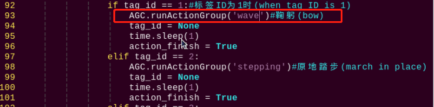
(6) Press “Esc” to enter last line command mode. Input “:wq” to save the file and exit the editor.
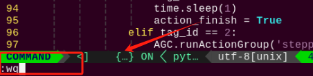
Modify or Add the Tag Recognition
The tag data is located in the “ApirlTag Tag Collection” folder under the directory of this section. (The directory needs to be unzipped first)
①You don’t need to download materials online, please go to the directory of this section to find “ApirlTag Tag Collection” for the provided tags. (200 tags in total)
②There is no absolute size requirement for the tag size if you want to print your tags. It is not recommended to be too large or too small for the performance of recognition. (The tag will be circled when recognized.)
③The background next to the tag will be better to keep in white. The dark background may affect the recognition.
In the following sample, we will add the ID4 as new tag. When the tag is recognized, TonyPi will run the “Cheering” action group.
(1) Take the reference of “5.8.5 Function Extension -> Modify the Action Corresponding to the Tag”, enter the catalog and open the program file.
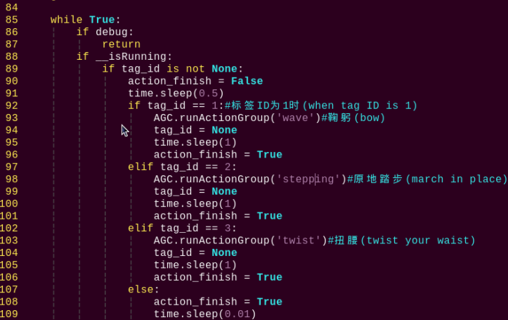
(2) Next, you need to copy the code inside the “elif” branch. Here, we can copy the code shown in the image. Move the mouse cursor to the corresponding “elif” line, then type “5yy” on the keyboard (to copy 5 lines). You will see a prompt “5 lines yanked” at the bottom, indicating successful copying.
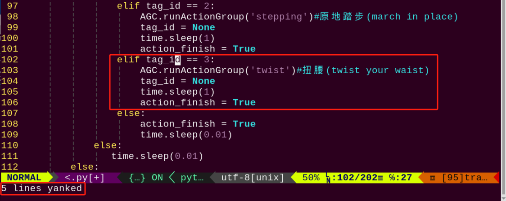
(3) Then paste these 5 lines of code, and move the mouse cursor to the position shown in the figure below:
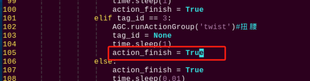
(4) Enter “p” on the keyboard to paste the previously copied 5 lines of code below:
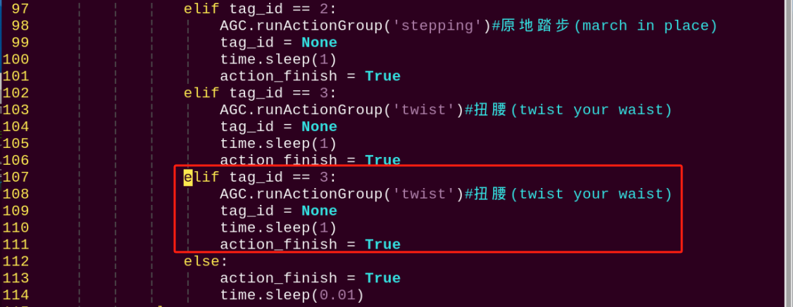
(5) Modify the copy code. Enter “i” to the editing mode and revise “tag_id” to “4”, and the action in the AGC.runActionGroup to “chest”.
The built-in action groups can be found in “/home/pi/TonyPi/ActionGroups”.
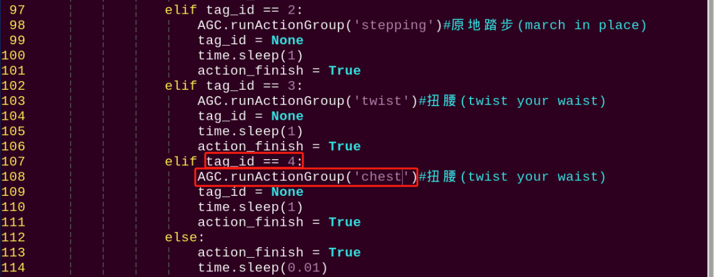
(6) The modification is completed now. Press “Esc” to enter last line command mode. Input “:wq” to save the file and exit the editor.
(7) Take the ID4 tag in folder “ApirlTag Tag Collection” and print it directly.
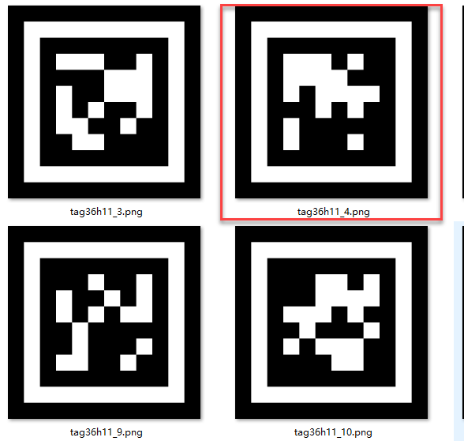
Check the project outcome according to the commands in previous learning.
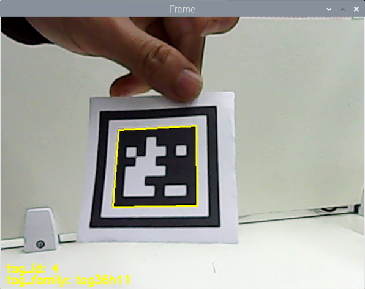
5.9 Face Recognition
5.9.1 Program Description
When a human face is detected, the onboard buzzer emits a beeping sound, and the face is highlighted in the video feed.
Facial recognition is one of the most widely used applications in artificial intelligence, commonly seen in scenarios such as smart door locks and smartphone face unlocking.
In this lesson, we use a pre-trained facial recognition model. The image is first resized to improve detection efficiency. Once a face is detected, its coordinates are mapped back to the original image size. The system identifies the largest face, draws a bounding box around it, and triggers the buzzer to sound an alert.
5.9.2 Start and Close the Game
Note
The input of commands must strictly distinguish between uppercase and lowercase letters.
(1) Power on the device and, following the instructions in “3. Remote Desktop Tool Installation and Connection->3.1 Remote Tool Installation and Connection”, use the VNC remote connection tool to connect.
(2) Click the icon in the top left corner of the system desktop to open the LX terminal.
(3) In the terminal, enter the command to navigate to the directory where the program is located, then press Enter:
cd TonyPi/Functions/
(4) Enter the command and press Enter to start the program:
python3 Face_Detect.py
(5) To close the program, simply press “Ctrl+C” in the LX terminal. If it does not close, press it multiple times.
5.9.3 Program Outcome
Note
For optimal performance, please avoid using this activity under strong lighting conditions, such as direct sunlight or close proximity to incandescent lights, as intense light can affect face recognition accuracy. It is recommended to conduct this activity indoors, with the face positioned within a range of 50 cm to 1 meter from the camera.
After the feature is activated, the buzzer will emit a beeping sound when a face is detected, and the detected face will be outlined in the returned video feed.
5.9.4 Program Brief Analysis
The source code of the program is saved in: /home/pi/TonyPi/Functions/Face_Detect.py
Program Logic
First, the camera captures image data, which is then processed by converting the color space to facilitate face detection.
MediaPipe’s face detection model is then applied to the image to identify faces. Once detection results are obtained, the system triggers a predefined action group in response.
Importing Parameter Modules
During the initialization step, the required libraries are first imported to enable subsequent program functionality. Specifically:
(1) “os” and “sys” are used for operating system functions and system parameter access.
(2) “cv2” (OpenCV library) is used for image processing.
(3) “time” is used for time control and delays.
(4) hiwonder.Misc and hiwonder.Board are hardware-specific libraries used to control components such as the buzzer.
3 4 5 6 7 8 9 10 11 12 13 14 15 16 17 | import sys import cv2 import math import time import threading import numpy as np import mediapipe as mp import hiwonder.ros_robot_controller_sdk as rrc import hiwonder.yaml_handle as yaml_handle import hiwonder.Camera as Camera # 人脸检测(face detection) # 初始化机器人底层驱动(initialize robot underlying driver) board = rrc.Board() |
| Module Import | Purpose |
|---|---|
import sys |
Imports the Python sys module, which provides access to system-specific parameters and functions. |
import cv2 |
Imports the OpenCV library, which is used for image processing and computer vision tasks. |
import time |
Imports the Python time module, which provides functions for handling time-related tasks, such as delays. |
import HiwonderSDK.Misc as Misc |
Imports the Misc module from the Hiwonder SDK for handling recognized rectangular data. |
import threading |
Provides support for running tasks in multiple threads concurrently |
import yaml_handle |
Contains functions or tools for handling YAML format files |
from ArmIK.Transform import * |
Imports functions for robotic arm posture transformations |
from ArmIK.ArmMoveIK import * |
Provides functions for inverse kinematics solving and control for robotic arm movement |
import HiwonderSDK.Board as Board |
Imports the Board module from the Hiwonder SDK, which is used to control sensors and execute related actions |
Setting Initial State
20 21 22 23 | # 导入人脸识别模块(import human face recognition module) face = mp.solutions.face_detection # 自定义人脸识别方法，最小的人脸检测置信度0.5(custom human face recognition method, the minimum face detection confidence is 0.5) face_detection = face.FaceDetection(min_detection_confidence=0.5) |
Color Space Conversion
The BGR image is converted to an RGB image.
54 55 | image_rgb = cv2.cvtColor(img_copy, cv2.COLOR_BGR2RGB) # 将BGR图像转为RGB图像(convert the BGR image to RGB image) results = face_detection.process(image_rgb) # 将每一帧图像传给人脸识别模块(pass each frame of the image to the face recognition module) |
Using Mediapipe Face Model for Recognition
The system performs face detection and draws a rectangle around the detected face.
56 57 58 59 60 61 62 63 | if results.detections: # 如果检测不到人脸那就返回None(if no face is detected, return None) for index, detection in enumerate(results.detections): # 返回人脸索引index(第几张脸)，和关键点的坐标信息(return the face index (which face) and the coordinate information of the keypoints) bboxC = detection.location_data.relative_bounding_box # 设置一个边界框，接收所有的框的xywh及关键点信息(set up a bounding box to receive the xywh and keypoint information for all boxes) # 将边界框的坐标点,宽,高从比例坐标转换成像素坐标(convert the coordinates, width, and height of the bounding box from relative coordinates to pixel coordinates) bbox = (int(bboxC.xmin * img_w), int(bboxC.ymin * img_h), int(bboxC.width * img_w), int(bboxC.height * img_h)) cv2.rectangle(img, bbox, (0,255,0), 2) # 在每一帧图像上绘制矩形框(draw a rectangle on each frame of the image) |
Face Recognition
If a face is detected, the buzzer will be activated to sound an alert. The function board.set_buzzer(1900, 0.3, 0.7, 1) is used to trigger the buzzer.
27 28 29 30 31 32 33 34 35 36 | def buzzer(): global di_once global detect_people while True: if detect_people and di_once: board.set_buzzer(1900, 0.3, 0.7, 1) # 以1900Hz的频率，持续响0.3秒，关闭0.7秒，重复1次(at a frequency of 1900Hz, sound for 0.1 seconds, then pause for 0.9 seconds, repeat once) di_once = False else: time.sleep(0.01) |
5.10 Face Recognition
5.10.1 Program Logic
The robot recognizes a human face, and after recognition, it performs a “greeting” action.
In artificial intelligence, one of the most widespread applications is image recognition, with facial recognition being the hottest application in image recognition. It is commonly used in scenarios like door locks and phone facial unlocking.
In this section, the trained face model is first zoomed to detect the face. Then the recognized face coordinates are converted to the coordinates before scaling. Judge whether it is the largest face, and frame the recognized face.
Then set the servo to rotate left and right to obtain the face, and call the action group to let the robot perform the recognized feedback.
5.10.2 Operation Steps
Note
Pay attention to the text format in the input of instructions.
(1) Turn on robot and connect it to Raspberry Pi desktop with VNC. You can refer to “3. Remote Desktop Tool Installation and Connection->3.1 Remote Tool Installation and Connection” to learn how to install and connect VNC.
(2) Double-click “Terminator” icon in the Raspberry Pi desktop and open command line.
(3) Input the following command and press Enter to locate to the directory where the program is stored.
cd TonyPi/Functions
(4) Input the command below, then press Enter to start the game.
python3 FaceDetect.py
(5) If you want to exit the game programming, press “Ctrl+C”. If the exit fails, please try it few more times.
5.10.3 Project Outcome
Note
Please do not try the Facial Recognition game under strong light, such as sunlight. Strong light will affect the recognition performance, so it is recommended to play this game indoors. It’s better to set the distance between face and camera with 50-100cm.
Start the facial recognition function, TonyPi will rotate its head to detect face. It will stop when the face is recognized, and run the greeting actions.
5.10.4 Programming Instruction
“The source code of this program is locate in /home/pi/TonyPi/Functions/FaceDetect.py.”
(1) Import Parameter Module
1 2 3 4 5 6 7 8 9 10 11 12 13 14 15 | import sys import os import cv2 import math import time import threading import numpy as np import mediapipe as mp import hiwonder.Camera as Camera import hiwonder.Misc as Misc import hiwonder.ros_robot_controller_sdk as rrc from hiwonder.Controller import Controller import hiwonder.ActionGroupControl as AGC import hiwonder.yaml_handle as yaml_handle |
① import sys :The Python “sys” module has been imported for accessing system-related functions and variables.
② import os:The Python “os” module has been imported, providing functions and methods for interacting with the operating system.
③ import cv2:The OpenCV library has been imported for image processing and computer vision-related functionalities
④ import time:The Python “time” module has been imported for time-related functionalities, such as delay operations.
⑤ import math:The “math” module provides low-level access to mathematical operations, including many commonly used mathematical functions and constants.
⑥ import threading:Provides an environment for running multiple threads concurrently.
⑦ import np:The NumPy library has been imported. It is an open-source numerical computing extension for Python, used for handling array and matrix operations.
⑧ import mediapipe as mp:Import mediapipe library, which is used to detect human face
⑨ import sensor.camera as camera:Import camera library
⑩ from common import misc:The “Misc” module has been imported for handling recognized rectangular data.
⑪ import common.ros_robot_controller_sdk as rrc:The robot’s underlying control library has been imported for controlling servos, motors, RGB lights, and other hardware.
⑫ import common.yaml_handle:Contains functionalities or tools related to processing YAML format files.
⑬ from common.controller import Controller:Import action group execution library.
(2) Set initial state
Set initial state, including the initial position of servo, human face recognition module, Minimum Face Confidence, etc.
33 34 35 36 | # 导入人脸识别模块(import human face recognition module) face = mp.solutions.face_detection # 自定义人脸识别方法，最小的人脸检测置信度0.5(custom human face recognition method, the minimum face detection confidence is 0.5) face_detection = face.FaceDetection(min_detection_confidence=0.7) |
50 51 52 53 54 55 | servo2_pulse = servo_data['servo2'] # 初始化机器人舵机初始位置(initialize the servo initialization position of robot) def initMove(): ctl.set_pwm_servo_pulse(1, 1800, 500) ctl.set_pwm_servo_pulse(2, servo2_pulse, 500) |
(3) Color space conversion
Convert the BGR image to LAB image.
138 | image_rgb = cv2.cvtColor(img_copy, cv2.COLOR_BGR2RGB) # 将BGR图像转为RGB图像(convert BGR image to RGB image) |
(4) Use mediapipe human face model recognition
Perform face detection and draw rectangles around the detected faces. Then, based on whether the position of the face center is in the center of the frame, if so, set “start_greet” to True to execute the action group.
139 140 141 142 143 144 145 146 147 148 149 150 151 152 153 | results = face_detection.process(image_rgb) # 将每一帧图像传给人脸识别模块(pass each frame of the image to the face recognition module) if results.detections: # 如果检测不到人脸那就返回None for index, detection in enumerate(results.detections): # 返回人脸索引index(第几张脸)，和关键点的坐标信息(return the face index (which face) and the coordinate information of the keypoints) bboxC = detection.location_data.relative_bounding_box # 设置一个边界框，接收所有的框的xywh及关键点信息(set up a bounding box to receive the xywh and keypoint information for all boxes) # 将边界框的坐标点,宽,高从比例坐标转换成像素坐标(convert the coordinates, width, and height of the bounding box from relative coordinates to pixel coordinates) bbox = (int(bboxC.xmin * img_w), int(bboxC.ymin * img_h), int(bboxC.width * img_w), int(bboxC.height * img_h)) cv2.rectangle(img, bbox, (0,255,0), 2) # 在每一帧图像上绘制矩形框(draw a rectangle on each frame of the image) x, y, w, h = bbox # 获取识别框的信息,xy为左上角坐标点(get the information of the recognition box, where xy is the coordinate point of the upper left corner) center_x = int(x + (w/2)) if abs(center_x - img_w/2) < img_w/4: if action_finish: start_greet = True |
(5) Face detection
If a face is detected, use the “agc.run_action_group” function to invoke the “wave” action group.
105 106 107 108 109 110 111 112 | while True: if __isRunning: if start_greet: start_greet = False action_finish = False AGC.runActionGroup('wave') # 识别到人脸时执行的动作(the action to be performed when a face is recognized) action_finish = True time.sleep(0.5) |
If no face is detected, control the pan-tilt servo to rotate left and right to search for a face.
113 114 115 116 117 118 119 120 121 | else: if servo2_pulse > 2000 or servo2_pulse < 1000: d_pulse = -d_pulse servo2_pulse += d_pulse ctl.set_pwm_servo_pulse(2, servo2_pulse, 50) time.sleep(0.05) else: time.sleep(0.01) |
5.10.5 Function Extension
Modify Feedback Action
Note
The built-in file is located in “/home/pi/TonyPi/ActionGroups”.
Program default setting is that TonyPi will execute the greeting action when detect the face. The feedback action can be revised to others such as bowing.
(1) Enter the following command to the directory where the game program is located.
cd TonyPi/Functions/
(2) Enter the command below to go into the game program through vi editor.
vim FaceDetect.py
(3) Find code AGC.runActionGroup('wave').
“wave” in the above image is the name of greeting action. If we want to revise the action to bowing, enter “bow” instead of “wave” in the “Action group instruction” in the path /home/pi/TonyPi/ActionGroups.
Note
The action name can be found in the “Action group instruction”.
(4) Press “i” to enter the editing mode, then modify “wave” to “bow”.
(5) Press “Esc” to enter last line command mode. Input “:wq” to save the file and exit the editor.
5.11 Gesture Control
5.11.1 Game Overview
This program leverages MediaPipe’s hand detection model to recognize palm joints. Upon detecting a specific hand gesture, the robot locks onto the fingertip within the camera frame, initiates tracking, and visualizes the fingertip’s movement by drawing its trajectory.
The process begins by invoking the MediaPipe hand detection model and capturing real-time images from the camera. The input image is then flipped and preprocessed to extract hand landmarks. By analyzing the connections between key points, the system calculates finger angles to accurately identify gestures.
Once a target gesture is recognized, the robot starts tracking the fingertip and overlays its movement path directly onto the video feed for visual feedback.
5.11.2 Start and Close the Game
Note
The input of commands must strictly distinguish between uppercase and lowercase letters.
(1) Turn on robot and connect it to Raspberry Pi desktop with VNC. You can refer to “3. Remote Desktop Tool Installation and Connection->3.1 Remote Tool Installation and Connection” to learn how to install and connect VNC.
(2) Double-click “Terminator” icon in the Raspberry Pi desktop and open command line.
(3) In the terminal, enter the command to navigate to the directory where the program is located, then press Enter:
cd TonyPi/Functions/
(4) Enter the command and press Enter to start the program:
python3 gesture_control.py
(5) To close the program, simply press “Ctrl+C” in the LX terminal. If it does not close, press it multiple times.
5.11.3 Program Outcome
After starting the program, place your hand within the camera’s field of view. Once the hand is detected, the system will mark the key points of the hand on the live video feed.
The camera displays the real-time view. When the gesture “1” (index finger pointing) is recognized, the system begins tracking the fingertip and drawing its movement path on the screen.
For example, if the fingertip moves to the right, a path will be drawn in that direction. When the system detects the open palm gesture “5”, the buzzer will beep once, the robot will strafe to the right, and the previously drawn trajectory will be cleared from the screen.
Similarly:
Moving the fingertip upward on the screen prompts the robot to move forward.
Moving it downward prompts the robot to move backward.
In each case, the robot responds to the drawn trajectory by executing the corresponding movement.
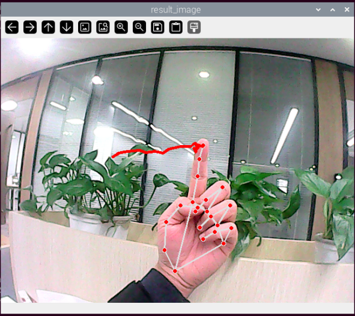
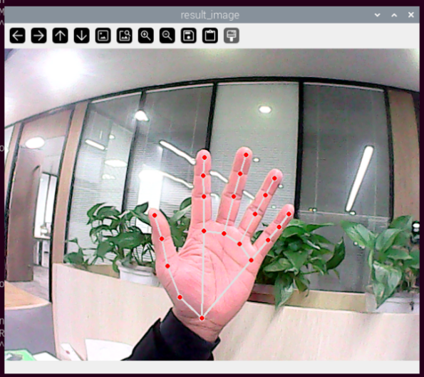
5.11.4 Brief Program Analysis
The program file corresponding to this lesson is located at: /home/pi/TonyPi/Functions/gesture_control.py
This feature captures images through the camera and performs preprocessing—specifically, converting the image to a different color space to enhance recognition. After preprocessing, the program extracts gesture feature points by identifying key landmarks on the hand. It then uses logical analysis (based on angles) to determine different hand gestures. Finally, the system draws the recognized gesture trajectory on the live video feed.
Note
Before making any modifications, be sure to back up the original factory program. Do not edit the source file directly, as improper parameter changes may result in serious malfunctions that could render the robot unusable.
Definition of the Drawing Object
155 | drawing = mp.solutions.drawing_utils |
drawing is a tool used to draw joint feature points. After detecting the key hand landmarks, it is used to visualize and connect those points accordingly.
mp refers to the MediaPipe recognition module, which is used to extract hand features. Its drawing_utils module serves as the toolkit for rendering the detected landmarks.
Definition of the Hand Feature Detector (hand_detector)
157 158 159 160 161 162 | hand_detector = mp.solutions.hands.Hands( static_image_mode=False, max_num_hands=1, min_tracking_confidence=0.05, min_detection_confidence=0.6 ) |
hand_detector is the hand feature detection tool. Here, mp refers to the MediaPipe recognition module, and mp.solutions.hands.Hands is the specific component used for extracting hand landmarks.
Several key parameters within this module require attention:
(1) static_image_mode: When set to False, the system dynamically tracks hands based on the value of max_num_hands. It is recommended to keep this set to False by default.
(2) max_num_hands: Specifies the maximum number of hands to detect. The default is 1.
(3) min_tracking_confidence:A threshold for hand tracking confidence. If the recognition confidence during movement exceeds this value, the system will update the hand’s position based on the current image. Otherwise, it will use the previously recognized position. If tracking is unstable, you may adjust this value by ±0.3, but it must not be lower than 0.
(4) min_detection_confidence: The minimum confidence threshold (between 0 and 1) for the hand detection model. If the detection exceeds this value, the content in the image is recognized as a hand. If detection is unreliable, consider adjusting this value by ±0.1, but it must not be lower than 0.
Gesture Recognition Processing Function
Once the basic tool parameters are defined, the program proceeds to the logic recognition phase. The following points outline the core parts of the code—from initial image preprocessing to the final drawing of the fingertip trajectory.
(1) Storing Key Landmark Detection Results
277 | results = hand_detector.process(image) |
The process function within self.hand_detector is used to extract the hand’s key landmarks. The results (i.e., the positions of these key points in the image) are stored in the results variable for further logical processing.
(2) Drawing Parameter Configuration
282 283 284 285 | drawing.draw_landmarks( display_image, hand_landmarks, mp.solutions.hands.HAND_CONNECTIONS) |
After detecting the key landmarks, the drawing tool must be configured to define how the landmarks and their connections are rendered.
① bgr_image: the input image.
② hand_landmarks: the detected key points of the hand.
③ HAND_CONNECTIONS: the connection scheme based on standard landmark indices to draw the lines between points.
(3) Finger Type Logical Classification (Thumb, Index Finger, etc.)
53 54 55 56 57 58 59 60 61 62 63 64 65 66 67 68 69 70 71 72 73 74 75 76 | def hand_angle(landmarks): """ 计算各个手指的弯曲角度 :param landmarks: 手部关键点 :return: 各个手指的角度 """ angle_list = [] # thumb 大拇指 angle_ = vector_2d_angle(landmarks[3] - landmarks[4], landmarks[0] - landmarks[2]) angle_list.append(angle_) # index 食指 angle_ = vector_2d_angle(landmarks[0] - landmarks[6], landmarks[7] - landmarks[8]) angle_list.append(angle_) # middle 中指 angle_ = vector_2d_angle(landmarks[0] - landmarks[10], landmarks[11] - landmarks[12]) angle_list.append(angle_) # ring 无名指 angle_ = vector_2d_angle(landmarks[0] - landmarks[14], landmarks[15] - landmarks[16]) angle_list.append(angle_) # pink 小拇指 angle_ = vector_2d_angle(landmarks[0] - landmarks[18], landmarks[19] - landmarks[20]) angle_list.append(angle_) angle_list = [abs(a) for a in angle_list] return angle_list |
Once the landmarks have been stored in the results variable, logical processing is performed to classify the finger types. This is achieved by analyzing the angles between specific key points to determine which finger is which (e.g., thumb, index finger).
The hand_angle function receives the landmark set (landmarks(results)) and uses the vector_2d_angle function to calculate the angles between relevant points. Each element in the landmarks set corresponds to a specific finger joint, as illustrated in the following diagram.
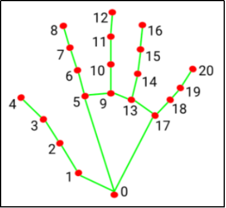
The vector_2d_angle function is used to calculate the angle between joints. Specifically, the points landmarks[3], landmarks[4], landmarks[0], and landmarks[2] correspond to the key landmarks numbered 3, 4, 0, and 2 in the hand feature extraction diagram. By computing the angle formed by these joints at the fingertip, the posture characteristics of the thumb can be determined.
Similarly, the processing logic for the other fingers’ joints follows the same approach.
To ensure accurate recognition, the parameters and basic logic (addition and subtraction of angles) inside the hand_angle function should be kept at their default settings.
(4) Gesture Feature Detection
78 79 80 81 82 83 84 85 86 87 88 89 90 91 92 93 94 95 96 97 98 99 100 101 102 103 104 105 106 107 108 109 110 111 112 113 114 115 116 117 118 119 120 121 122 123 | def h_gesture(angle_list): """ 通过二维特征确定手指所摆出的手势 :param angle_list: 各个手指弯曲的角度 :return : 手势名称字符串 """ thr_angle = 65. thr_angle_thumb = 53. thr_angle_s = 49. gesture_str = "none" if (angle_list[0] > thr_angle_thumb) and (angle_list[1] > thr_angle) and (angle_list[2] > thr_angle) and ( angle_list[3] > thr_angle) and (angle_list[4] > thr_angle): gesture_str = "fist" elif (angle_list[0] < thr_angle_s) and (angle_list[1] < thr_angle_s) and (angle_list[2] > thr_angle) and ( angle_list[3] > thr_angle) and (angle_list[4] > thr_angle): gesture_str = "hand_heart" elif (angle_list[0] < thr_angle_s) and (angle_list[1] < thr_angle_s) and (angle_list[2] > thr_angle) and ( angle_list[3] > thr_angle) and (angle_list[4] < thr_angle_s): gesture_str = "nico-nico-ni" elif (angle_list[0] < thr_angle_s) and (angle_list[1] > thr_angle) and (angle_list[2] > thr_angle) and ( angle_list[3] > thr_angle) and (angle_list[4] > thr_angle): gesture_str = "hand_heart" elif (angle_list[0] > 5) and (angle_list[1] < thr_angle_s) and (angle_list[2] > thr_angle) and ( angle_list[3] > thr_angle) and (angle_list[4] > thr_angle): gesture_str = "one" elif (angle_list[0] > thr_angle_thumb) and (angle_list[1] < thr_angle_s) and (angle_list[2] < thr_angle_s) and ( angle_list[3] > thr_angle) and (angle_list[4] > thr_angle): gesture_str = "two" elif (angle_list[0] > thr_angle_thumb) and (angle_list[1] < thr_angle_s) and (angle_list[2] < thr_angle_s) and ( angle_list[3] < thr_angle_s) and (angle_list[4] > thr_angle): gesture_str = "three" elif (angle_list[0] > thr_angle_thumb) and (angle_list[1] > thr_angle) and (angle_list[2] < thr_angle_s) and ( angle_list[3] < thr_angle_s) and (angle_list[4] < thr_angle_s): gesture_str = "OK" elif (angle_list[0] > thr_angle_thumb) and (angle_list[1] < thr_angle_s) and (angle_list[2] < thr_angle_s) and ( angle_list[3] < thr_angle_s) and (angle_list[4] < thr_angle_s): gesture_str = "four" elif (angle_list[0] < thr_angle_s) and (angle_list[1] < thr_angle_s) and (angle_list[2] < thr_angle_s) and ( angle_list[3] < thr_angle_s) and (angle_list[4] < thr_angle_s): gesture_str = "five" elif (angle_list[0] < thr_angle_s) and (angle_list[1] > thr_angle) and (angle_list[2] > thr_angle) and ( angle_list[3] > thr_angle) and (angle_list[4] < thr_angle_s): gesture_str = "six" else: "none" return gesture_str |
After identifying different finger types and determining their positions in the image, you can implement the function h_gesture to perform logical recognition for various hand gestures.
In the h_gesture function shown above, the parameters thr_angle = 65, thr_angle_thenum = 53, and thr_angle_s = 49 serve as threshold angle values for gesture logic decisions. These values were determined through testing and provide stable recognition results. It is not recommended to change them significantly; if the recognition performance is unsatisfactory, you may adjust these thresholds by ±5 degrees.
The list angle_list[0,1,2,3,4] corresponds to the angles of the five fingers of the hand.
Taking the gesture “one” as an example:
100 101 102 | elif (angle_list[0] > 5) and (angle_list[1] < thr_angle_s) and (angle_list[2] > thr_angle) and ( angle_list[3] > thr_angle) and (angle_list[4] > thr_angle): gesture_str = "one" |
① angle_list[0] > 5 checks whether the thumb’s joint angle in the image is greater than 5 degrees.
② angle_list[1] < thr_angle_s verifies if the index finger’s angle is less than the threshold thr_angle_s.
③ angle_list[2] < thr_angle checks if the middle finger’s angle is less than thr_angle.
④ The logic for the other two fingers, angle_list[3] and angle_list[4], follows a similar pattern.
When these conditions are met, the current gesture is recognized as “one.” Recognition of other gestures follows similar logical frameworks.
Although the specific logic varies by gesture, the overall structure is consistent. You can refer to the previous section for details on other gesture recognition logics.
(5) Fingertip Feature Detection, Motion Trajectory Drawing, and Trajectory Clearing
The fingertip feature detection process is illustrated in the diagram below:
290 291 292 293 294 295 296 297 298 299 | if state != State.TRACKING: if gesture == "one": # 检测食指手势， 开始指尖追踪 count += 1 if count > 5: count = 0 state = State.TRACKING points = [] points_list = [] else: count = 0 |
The code snippet above shows the logic used when the gesture “one” is detected. The variable self.count tracks the number of consecutive frames the gesture has been maintained. When self.count < 5, it means the gesture must be held for 5 frames before it is confirmed as gesture “one”. (Adjusting this frame count allows control over the duration needed for recognition—typically set around 5 to 7 frames. Too long a duration may negatively impact recognition accuracy.)
Once confirmed, the current gesture state is set to TRACKING, meaning the system can start tracking motion. At this point, self.points (representing the positions of the current two adjacent points) and points_list (a collection of feature points used to draw the trajectory line) are initialized.
The motion trajectory drawing process is illustrated in the following diagram:
301 302 303 304 305 306 307 308 309 310 311 312 313 314 | elif state == State.TRACKING: if gesture != "two": if len(points) > 0: last_point = points[-1] if distance(last_point, index_finger_tip) < 5: count += 1 else: count = 0 points_list.append([int(index_finger_tip[0]), int(index_finger_tip[1])]) points.append(index_finger_tip) else: points_list.append([int(index_finger_tip[0]), int(index_finger_tip[1])]) points.append(index_finger_tip) draw_points(display_image, points) |
While the gesture is in the sliding (tracking) state, a custom function distance is used to calculate the distance between two points before and after movement. The logical condition distance(last_point, index_finger_tip) < 5 checks whether the pixel distance between these two points is less than 5.
The value 5 represents the pixel threshold for movement between frames. If a faster movement speed and still accurate logic are required, this value can be slightly increased—though it is recommended not to exceed 10. Conversely, lowering the value tightens the movement threshold.
The fingertip’s positional data is stored in pixels, which holds the (x, y) coordinates of the fingertip and is used for drawing the trajectory on the image.
The trajectory clearing process is illustrated in the diagram below:
if gesture == "five":
state = State.NULL
if len(points_list) > 10 and not start_move:
board.set_buzzer(1900, 0.1, 0.9, 1)
target_points = points_list
start_move = True
points = []
points_list = []
draw_points(display_image, points)
except Exception as e:
print(e)
return display_image
When the gesture is recognized as “five”, the gesture recognition state is set to NULL (empty), and the current collection of points (the recorded trajectory positions) is cleared.
5.12 Pose Control
5.12.1 Game Overview
This experiment is designed to use MediaPipe’s pose detection model to recognize key human body points (such as hands, arms, shoulders, etc.) and, based on their positions and angles, achieve real-time control of body posture. By detecting the posture of the hands, the robot can respond accordingly, enabling gesture-based human-robot interaction.
The core of the experiment is to capture the user’s posture information in real time using MediaPipe’s pose detection model and map it to the robot’s motion control system.
The process includes:
Using MediaPipe’s pose model to obtain the coordinates of key body points.
Calculating movements (e.g., raising an arm, bending an elbow) based on changes in key point positions.
Mapping the user’s movements to the robot’s arm joint controls, allowing the robot to mimic the user’s actions.
Displaying the user’s posture and the robot’s action status in real time on the screen.
5.12.2 Start and Close the Game
Note
The input of commands must strictly distinguish between uppercase and lowercase letters.
(1) Turn on robot and connect it to Raspberry Pi desktop with VNC. You can refer to “3. Remote Desktop Tool Installation and Connection->3.1 Remote Tool Installation and Connection” to learn how to install and connect VNC.
(2) Double-click “Terminator” icon in the Raspberry Pi desktop and open command line.
(3) In the terminal, enter the command to navigate to the directory where the program is located, then press Enter:
cd TonyPi/Functions/
(4) Enter the command and press Enter to start the program:
python3 pose_control.py
(5) To close the program, simply press “Ctrl+C” in the LX terminal. If it does not close, press it multiple times.
5.12.3 Program Outcome
After starting the activity, place your hand within the camera’s field of view. Once the upper body skeleton is detected, key points of the human body will be marked in the returned video feed.
The camera will display the live video and automatically recognize the body’s key points. Based on the key points of the hands, the servos will be driven to mimic the movements of the human arm. When the user opens their arms, the robot will simultaneously open its arms as well, achieving posture-based control.
5.12.4 Brief Program Analysis
The program file corresponding to this lesson is located at /home/pi/TonyPi/Functions/pose_control.py
Note
Always back up the original factory program before making any modifications. Directly editing the source code is strictly prohibited, as improper changes to parameters may result in serious malfunctions that could render the robot inoperable and beyond repair.
(1) Import Function Library
3 4 5 6 7 8 9 10 11 12 13 14 15 16 17 18 | import os import cv2 import math import copy import threading import numpy as np import mediapipe as mp from hiwonder import fps from mediapipe import solutions from mediapipe.tasks import python import hiwonder.yaml_handle as yaml_handle from hiwonder.Controller import Controller from mediapipe.tasks.python import vision import hiwonder.ros_robot_controller_sdk as rrc from mediapipe.framework.formats import landmark_pb2 from mediapipe_visual import draw_pose_landmarks_on_image |
① import os:Imports Python’s os module, which provides functions for interacting with the operating system.
② import cv2:Imports the OpenCV library for image processing and computer vision tasks.
③import math:Provides access to mathematical functions and constants.
④ import copy:Enables object copying functionality.
⑤ import threading:Provides support for running multiple threads concurrently.
⑥ import numpy as np:Imports NumPy, a library for numerical computing, commonly used for handling arrays and matrix operations.
⑦ import mediapipe as mp:Imports the MediaPipe library for pose and hand gesture detection.
⑧ from hiwonder import fps :Imports the FPS (frames per second) calculator for performance monitoring.
⑨ from mediapipe import solutions:Imports pre-defined modules from MediaPipe, such as hand tracking, face detection, and pose estimation.
⑩ from mediapipe.tasks import python: Imports the Python API from MediaPipe’s task module.
⑪ import hiwonder.yaml_handle as yaml_handle:Provides tools for handling YAML-format configuration files.
⑫ from hiwonder.Controller import Controller:Imports the motion control library for managing robot movements.
⑬ from mediapipe.tasks.python import vision:Imports the vision module for handling visual processing tasks.
⑭ import hiwonder.ros_robot_controller_sdk as rrc:Imports the low-level robot control SDK for controlling servos, motors, RGB lights, and other hardware.
⑮ from mediapipe.framework.formats import landmark_pb2:Handles serialization and deserialization of landmark data.
⑯ from mediapipe_visual import draw_pose_landmarks_on_image:Used to draw pose landmarks on images, helping to visualize detected key points.
(2) Pose Detection Initialization
57 | model_path = os.path.join(os.path.abspath(os.path.split(os.path.realpath(__file__))[0]), 'model/pose_landmarker_lite.task') |
Load a pre-trained MediaPipe Lite pose detection model to detect 33 human body keypoints. model_path: Specifies the path to the model file. base_options: Sets the model file path using MediaPipe’s base options. options: Configures the pose detector, including whether to output a segmentation mask. detector: Instantiates the pose detection object.
(3) Image Preprocessing
① cv2.cvtColor: Converts the image from BGR format to RGB format, as required by MediaPipe.
② cv2.flip: Horizontally flips the image to better match natural viewing habits.
③ mp.Image: Converts the image into a format compatible with MediaPipe.
(3) Posture Detection
72 | detection_result = detector.detect(mp_image) |
Use the MediaPipe pose detector to analyze the image and return the detection results.
(4) Drawing Pose Landmarks
79 80 81 82 | # Draw the pose landmarks. pose_landmarks_proto = landmark_pb2.NormalizedLandmarkList() pose_landmarks_proto.landmark.extend([ landmark_pb2.NormalizedLandmark(x=landmark.x, y=landmark.y, z=landmark.z) for landmark in pose_landmarks |
① pose_landmarks_list: A list of detected human pose landmarks.
② annotated_image: A copy of the original image used to draw the detection results.
③ Iterate through each detected human pose to visualize the landmarks.
(5) Calculate Joint Angle
107 108 109 110 111 112 113 | # up 0 1000down angle1 = vector_2d_angle(np.array(left_p1) - np.array(left_p0), np.array(left_p1) - np.array(left_p2)) angle2 = vector_2d_angle(np.array(left_p2) - np.array(left_p1), np.array(left_p3) - np.array(left_p2)) # 90 -90 # 1000 0 angle3 = vector_2d_angle(np.array(right_p1) - np.array(right_p0), np.array(right_p1) - np.array(right_p2)) angle4 = vector_2d_angle(np.array(right_p2) - np.array(right_p1), np.array(right_p3) - np.array(right_p2)) |
Use the vector_2d_angle() function to calculate the angles between human joints (such as shoulders, elbows, knees, etc.). This function computes the angle using the dot product and cross product of 2D vectors. Each angle is determined by applying the cosine and sine rules.
(6) Set Servo Angle Range
123 124 125 126 127 128 129 130 131 132 133 134 135 136 137 138 | if servo6 > 875: servo6 = 875 if servo6 < 125: servo6 = 125 if servo7 > 875: servo7 = 875 if servo7 < 125: servo7 = 125 if servo14 > 875: servo14 = 875 if servo14 < 125: servo14 = 125 if servo15 > 875: servo15 = 875 if servo15 < 125: servo15 = 125 |
(7) Control Servo
Control the servo based on the calculated angle.
148 149 150 151 152 153 | if x1 > 0 and x2 > 0: board.bus_servo_set_position(0.1, [[7, servo7], [6, servo6], [14, servo14], [15, servo15]]) elif x1 > 0 and x2 < 0: board.bus_servo_set_position(0.05, [[7, servo7], [6, servo6]]) elif x1 < 0 and x2 > 0: board.bus_servo_set_position(0.05, [[14, servo14], [15, servo15]]) |
The calculated joint angles are mapped to the servo’s operating range (between 125 and 875). The val_map() function is used to convert the angle values into the valid range for servo control. For each angle, it checks whether the value falls within the allowed limits and clamps it if necessary. The function board.bus_servo_set_position() sets the servo position accordingly to control the movement.
(8) Drawing MediaPipe Default Pose Landmarks
Use MediaPipe’s default style to draw pose landmarks.
155 156 157 158 159 160 | solutions.drawing_utils.draw_landmarks( annotated_image, pose_landmarks_proto, solutions.pose.POSE_CONNECTIONS, solutions.drawing_styles.get_default_pose_landmarks_style()) last_angle = [servo6, servo7, servo14, servo15] |
The function solutions.drawing_utils.draw_landmarks() is used to render the human pose keypoints and their connecting lines on the image. The pose_landmarks_proto stores the coordinates of each landmark, which are then drawn onto the output image.
5.13 Intelligent Transport
Note
This section is only applicable to users who have purchased the advanced version. The demonstration effect can be viewed in the folder for this section.
5.13.1 Program Logic
The robot will sequentially transport sponge blocks on the map to the corresponding AprilTag label locations until all items are delivered.
This lesson focuses on how the robot accomplishes the task of item transportation, which is divided into two main stages: the recognition stage and the transportation stage.
Recognition Stage: Using coordination between the robot base and the pan-tilt mechanism, the robot “searches” for recognizable objects on the map. When a recognizable color appears within the visual range, the robot begins processing color recognition. The image is first converted to the Lab color space and then binarized. After applying dilation and erosion operations, contours containing only the program-defined colors are obtained. By bounding these color contours, the robot achieves object color recognition. Transportation Stage: Once recognition is complete, the robot moves into transportation. Based on the processed image feedback, when multiple objects are within the field of view, the robot assesses their relative distances and prioritizes transporting the closest object. The robot approaches the selected object and, upon reaching a set range, lifts it up to its head level. According to the object’s color, the robot matches it with the corresponding AprilTag label, which determines the final delivery location. Then, by controlling the pan-tilt and the robot base, it scans the map for tags. When a tag is detected, the robot takes different actions depending on whether it is the target tag.
If the scanned tag is the target, the robot transports the object directly to that point and places it down.
If the scanned tag is not the target, the robot uses the tag’s position to infer the location of the target tag, then reorients itself toward the target. Once the target tag is scanned, the robot transports the object there and releases it.
5.13.2 Getting Ready
(1) The function of this section should be operated on the provided map. The right side is the items placement zone and the left side is the receiving space.
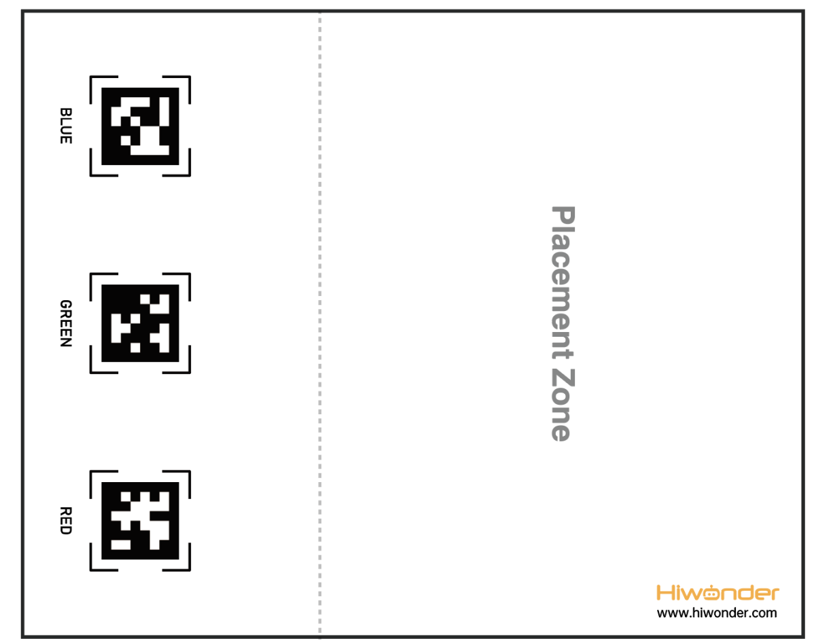
(2) Place the map on the smooth floor. Place the TonyPi and color blocks in the placement zone.
5.13.3 Operation Steps
Note
Pay attention to the text format in the input of instructions.
(1) Turn on robot and connect it to Raspberry Pi desktop with VNC. You can refer to “3. Remote Desktop Tool Installation and Connection->3.1 Remote Tool Installation and Connection” to learn how to install and connect VNC.
(2) Double-click “Terminator” icon in the Raspberry Pi desktop and open command line.
(3) In the terminal, enter the command to navigate to the directory where the program is located, then press Enter:
cd TonyPi/Functions/
(4) Input the following command , then press Enter to start the game.
python3 Transport.py
(5) If you want to exit the game programming, press “Ctrl+C” in the LX terminal interface. If the exit fails, please try it few more times.
5.13.4 Project Outcome
Note
It is recommended to place the map on a flat and open surface for optimal performance.
Place the robot and sponge blocks of red, green, and blue colors randomly within the placement area of the map. After starting the intelligent transportation gameplay, the robot will sequentially transport sponge blocks to the corresponding AprilTag markers based on their proximity until all three blocks are transported.
5.13.5 Comparison Between Voice Transport and Intelligent Transport
| Voice transport | Intelligent transport | |
|---|---|---|
| control methods | After starting the command-line game | |
| Voice control | Auto work | |
| Application scenarios | Quiet Environment (Voice commands effective within a distance of less than 30cm) | Noisy Environment (No distance requirement) |
| Work mode | Single Transport | Continuous Transport |
5.13.6 Program Parameter Instruction
The source code of this program is located in: /home/pi/TonyPi/Functions/Transport.py.
Import Parameter Module
(1) import sys:Imports Python’s sys module, used for accessing system-related functions and variables
(2) import os:Imports Python’s os module, providing functions and methods to interact with the OS
(3) import cv2:Imports the OpenCV library for image processing and computer vision-related functions
(4) import time:Imports Python’s time module for time-related functions, such as delays
(5) import math:Provides low-level access to mathematical operations, including many common math functions and constants
(6) import threading:Provides a multi-threading runtime environment
(7) import np:Imports the NumPy library, an open-source Python numerical computation extension for array and matrix operations
(8) import hiwonder.TTS as TTS:Imports the speech recognition library
(9) import hiwonder.Camera as Camera:Imports the camera library
(10) from hiwonder.Misc import Misc:Imports the Misc module used to process recognized rectangular data
(11) import hiwonder.ros_robot_controller_sdk as rrc:Imports the robot’s low-level control library, used to control servos, motors, RGB lights, and other hardware
(12) from hiwonder.controller import Controller:Imports the motion control library
(13) import hiwonder.ActionGroupControl as AGC:Imports the action group execution library
(14) import common.yaml_handle:Includes functions or tools for processing YAML format files
Transport color and preset position parameters
In this game, set up objects of three colors: red, green, and blue, and transport them to their corresponding tag positions, as shown in the pictured:
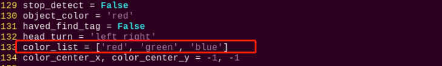
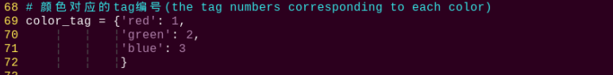
Detect transported object
(1) detect adjustment
At the beginning, the robot adjusts its left and right direction to find the objects to be transported. The specific settings are as shown in the following image:
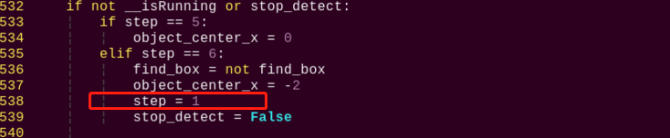
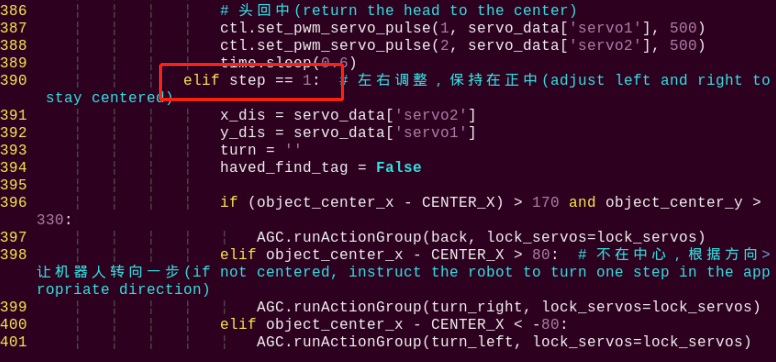
(2) To detect the objects for transportation based on their color, the following code is used.
545 | color, color_center_x, color_center_y, color_angle = colorDetect(img) # 颜色检测，返回颜色，中心坐标，角度(color detection, return color, center coordinates, angle) |
The main process involved in detecting object colors is as follows:
① Before converting the image to the LAB color space, noise reduction processing is required. The GaussianBlur() function is used for Gaussian filtering as pictured:
226 227 | frame_resize = cv2.resize(img, size, interpolation=cv2.INTER_NEAREST) frame_gb = cv2.GaussianBlur(frame_resize, (3, 3), 3) |
The first parameter “frame_resize” is inputting image.
The second parameter “(3, 3)” is the size of the Gaussian kernel. A larger kernel size typically results in a greater degree of filtering, making the output image more blurry, and it also increases computational complexity.
The third parameter “3” is the standard deviation of the Gaussian function along the X direction. In the Gaussian filter, it is used to control the variation near its mean. If this value is increased, the allowable range of variation around the mean is also increased; if decreased, the allowable range of variation around the mean is reduced.
②By using the inRange function to perform binaryzation on the input image as pictured:
234 235 236 237 238 239 240 | frame_mask = cv2.inRange(frame_lab, (lab_data[i]['min'][0], lab_data[i]['min'][1], lab_data[i]['min'][2]), (lab_data[i]['max'][0], lab_data[i]['max'][1], lab_data[i]['max'][2])) #对原图像和掩模进行位运算(perform bitwise operation to original image and mask) |
③ To reduce interference and make the image smoother, it is necessary to perform erosion and dilation operations on the image as pictured:
241 242 | eroded = cv2.erode(frame_mask, cv2.getStructuringElement(cv2.MORPH_RECT, (3, 3))) #腐蚀(corrosion) dilated = cv2.dilate(eroded, cv2.getStructuringElement(cv2.MORPH_RECT, (3, 3))) #膨胀(dilation) |
In the processing, the getStructuringElement function is used to generate structuring elements of different shapes.
The first parameter cv2.MORPH_RECT is the shape of the kernel, which is a rectangle in this case.
The second parameter (3, 3) is the size of the rectangle, which is 3x3 in this case.
④ Find out the largest contour of the object as pictured:

To avoid interference, the if area_max > 500 instruction is used to ensure that only contours with an area greater than 500 are considered valid for the largest area.
⑤ When the robot detects colored objects, use the cv2.drawContours() function to draw the contours of the colored objects as pictured:
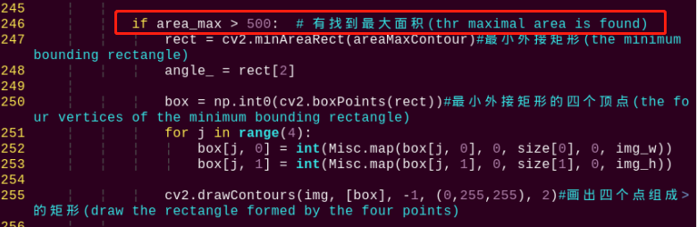
The first parameter img is the input image.
The second parameter [box] is the contour itself, represented as a list in Python.
The third parameter “-1” is the index of the contour, where the numerical value represents drawing all contours within the list.
The fourth parameter (0, 255, 255) is the contour color, with the order being B, G, R, where (0, 255, 255) represents yellow in this case.
The fifth parameter “2” is the contour width. If set to “-1”, it means to fill the contour with the specified color.
⑥ After the robot detects the colored object, use the cv2.circle() function to draw the center point of the colored object on the feedback screen as pictured:
261 | cv2.circle(img, (center_x_, center_y_), 5, (0, 255, 255), -1)#画出中心点(draw center point) |
The first parameter img is the input image, which is the image of the detected colored object in this case.
The second parameter (centerX, centerY) is the coordinates of the center point of the circle to be drawn (determined based on the detected object).
The third parameter “5” is the radius of the circle to be drawn.
The fourth parameter (0, 255, 255) is the color of the circle to be drawn, with the order being B, G, R, and in this case, it represents yellow.
The fifth parameter “-1” indicates that the circle should be filled with the color specified in parameter 4. If it is a number, it represents the line width of the circle to be drawn.
Start transporting
After detecting a colored object, the robot starts transporting the object, which can be divided into several steps: approaching the object, picking up the object, finding the transportation location, transporting the object, and putting down the object.
(1) approach the object
Before starting the transport, first control the robot to gradually approach the object to be transported as pictured:
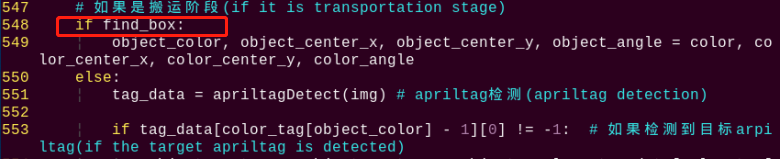
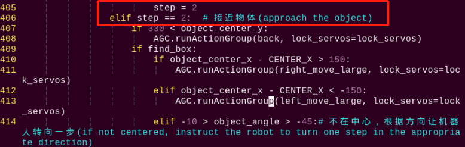
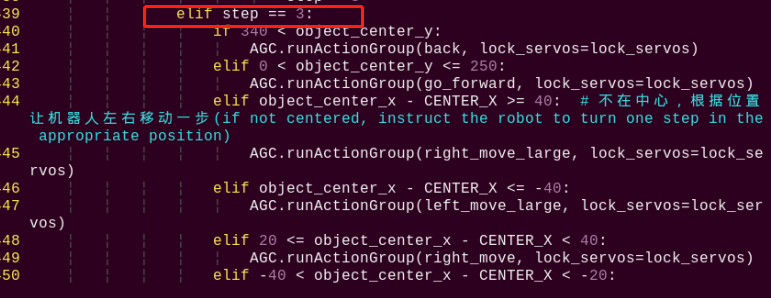
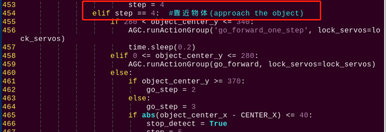
(2) pick up the object
After approaching the object, control the robot to pick up the object to be transported as pictured:
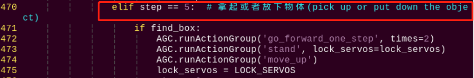
(3) find the transportation location
Before transporting the object, find the placement position for the colored object by detecting and recognizing the tag as pictured:
551 | tag_data = apriltagDetect(img) # apriltag检测(apriltag detection) |
The main control parameters involved in the process are as follows:
① After obtaining the information of the four corner points of the tag code, use the cv2.drawContours() function to draw the contour of the tag as pictured:
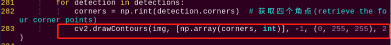
② After the robot detects the tag, use the cv2.circle() function to draw the center point of the tag on the feedback screen as pictured:
288 289 | object_center_x, object_center_y = int(detection.center[0]), int(detection.center[1]) # 中心点(center point) cv2.circle(frame, (object_center_x, object_center_y), 5, (0, 255, 255), -1) |
(4) transport object
After picking up the object, transport the object to the corresponding position as pictured:
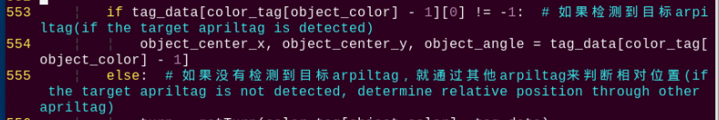
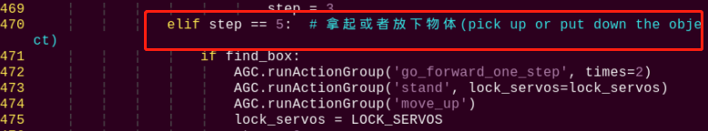
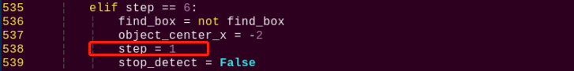
After picking up the object, set “step = 1”, then control the robot to adjust its left and right position to face the tag position as pictured:
390 391 392 393 394 395 396 397 398 399 400 401 402 403 | elif step == 1: # 左右调整，保持在正中(adjust left or right to maintain in the center) x_dis = servo_data['servo2'] y_dis = servo_data['servo1'] turn = '' haved_find_tag = False if (object_center_x - CENTER_X) > 170 and object_center_y > 330: AGC.runActionGroup(back, lock_servos=lock_servos) elif object_center_x - CENTER_X > 80: # 不在中心，根据方向让机器人转向一步(not in the center, turn the robot one step according to the direction) AGC.runActionGroup(turn_right, lock_servos=lock_servos) elif object_center_x - CENTER_X < -80: AGC.runActionGroup(turn_left, lock_servos=lock_servos) elif 0 < object_center_y <= 250: AGC.runActionGroup(go_forward, lock_servos=lock_servos) |
Then, gradually set “step = 2”, “step = 3”, “step = 4” to control the robot to transport the object to the tag position as pictured:
405 406 407 408 409 410 411 412 413 414 415 416 417 418 419 420 421 | step = 2 elif step == 2: # 接近物体(approach the object) if 330 < object_center_y: AGC.runActionGroup(back, lock_servos=lock_servos) if find_box: if object_center_x - CENTER_X > 150: AGC.runActionGroup(right_move_large, lock_servos=lock_servos) elif object_center_x - CENTER_X < -150: AGC.runActionGroup(left_move_large, lock_servos=lock_servos) elif -10 > object_angle > -45:# 不在中心，根据方向让机器人转向一步(not in the center, turn the robot one step according to the direction) AGC.runActionGroup(turn_left, lock_servos=lock_servos) elif -80 < object_angle <= -45: AGC.runActionGroup(turn_right, lock_servos=lock_servos) elif object_center_x - CENTER_X > 40: AGC.runActionGroup(right_move_large, lock_servos=lock_servos) elif object_center_x - CENTER_X < -40: AGC.runActionGroup(left_move_large, lock_servos=lock_servos) |
454 455 456 457 458 459 460 461 462 463 464 465 466 467 | step = 4 elif step == 4: #靠近物体(approach the object) if 280 < object_center_y <= 340: AGC.runActionGroup('go_forward_one_step', lock_servos=lock_servos) time.sleep(0.2) elif 0 <= object_center_y <= 280: AGC.runActionGroup(go_forward, lock_servos=lock_servos) else: if object_center_y >= 370: go_step = 2 else: go_step = 3 if abs(object_center_x - CENTER_X) <= 40: stop_detect = True |
During the transportation process, if the target tag is not detected, use other tags to determine the relative position as pictured:
303 304 305 306 307 308 309 310 311 312 313 314 315 316 317 318 319 320 321 322 323 324 325 326 327 328 329 | # 通过其他apriltag判断目标apriltag位置(determine the position of the target apriltag using Other apriltags) # apriltag摆放位置：红(tag36h11_1)，绿(tag36h11_2)，蓝(tag36h11_3)(apriltag placement: red(tag36h_11_1), green(tag36h11_2), blue(tag36h11_3)) def getTurn(tag_id, tag_data): tag_1 = tag_data[0] tag_2 = tag_data[1] tag_3 = tag_data[2] if tag_id == 1: # 目标apriltag为1(target apriltag is 1) if tag_2[0] == -1: # 没有检测到apriltag 2(apriltag 2 is not detected) if tag_3[0] != -1: # 检测到apriltag 3， 则apriltag 1在apriltag 3左边，所以左转(detected apriltag 3, therefore apriltag 1 is to the left of apriltag 3, so turn left) return 'left' else: # 检测到apriltag 2，则则apriltag 1在apriltag 2左边，所以左转(detected apriltag 2, therefore apriltag 1 is to the left of apriltag 2, so turn left) return 'left' elif tag_id == 2: if tag_1[0] == -1: if tag_3[0] != -1: return 'left' else: return 'right' elif tag_id == 3: if tag_1[0] == -1: if tag_2[0] != -1: return 'right' else: return 'right' return 'None' |
570 571 572 573 | if turn == 'None': object_center_x, object_center_y, object_angle = -1, -1, 0 else: # 完全没有检测到apriltag(if no AprilTag is detected at all) object_center_x, object_center_y, object_angle = -3, -1, 0 |
(5) put down object
After completing the transportation, put down the object as pictured:
570 571 572 573 574 575 576 577 578 579 580 581 582 583 584 585 | elif step == 5: # 拿起或者放下物体(pick up or put down the object) if find_box: AGC.runActionGroup('go_forward_one_step', times=2) AGC.runActionGroup('stand', lock_servos=lock_servos) AGC.runActionGroup('move_up') lock_servos = LOCK_SERVOS step = 6 else: AGC.runActionGroup('go_forward_one_step', times=go_step, lock_servos=lock_servos) AGC.runActionGroup('stand', lock_servos=lock_servos) AGC.runActionGroup('put_down') AGC.runActionGroup(back, times=5, with_stand=True) color_list.remove(object_color) if color_list == []: color_list = ['red', 'green', 'blue'] lock_servos = '' |
5.14 Object Tracking
5.14.1 Program Logic
The robot recognizes colors, and its body can move according to the movement of the target color.
First, program TonyPi to recognize colors with Lab color space. Convert the RGB color space to Lab, image binarization, and then perform operations such as expansion and corrosion to obtain an outline containing only the target color. Use circles to frame the color outline to realize object color recognition.
Next, the traversal algorithm compares all correctly recognized colored objects and selects the object with the largest contour area as the target.
Finally, the servo is called to perform real-time tracking, while the body is driven to perform follow-up actions through action groups, thus completing the object tracking function.
5.14.2 Operation Steps
Note
Instructions must be entered with strict attention to case sensitivity and spacing.
(1) Turn on robot and connect it to Raspberry Pi desktop with VNC. You can refer to “3. Remote Desktop Tool Installation and Connection->3.1 Remote Tool Installation and Connection” to learn how to install and connect VNC.
(2) Double-click “Terminator” icon in the Raspberry Pi desktop and open command line.
(3) In the terminal, enter the command to navigate to the directory where the program is located, then press Enter:
cd TonyPi/Functions/
(4) Input the command below, then press Enter to start the game.
python3 Follow.py
(5) If you want to exit the game programming, press “Ctrl+C”. If the exit fails, please try it few more times.
5.14.3 Project Outcome
Note
The default recognized and tracking color is green. If you want to change to blue or red, please refer to “5.14.4 Function Extension -> Modify Default Recognition Color”. Furthermore, when moving the handheld colored sponge blocks, the speed should not be too fast, and it should be within the range of camera recognition.
After the game is started, slowly move the red sponge block by hand or place the block on a movable carrier. The TonyPi robot will move along with the movement of the target color.
5.14.4 Function Extension
Modify Default Recognition Color
Black, red and green are the built-in colors in the motion tracking program and red is the default color. In the following steps, we’re going to modify the tracking color as green.
(1) Enter the following command to the directory where the game program is located.
cd TonyPi/Functions/
(2) Enter the command below to go into the game program through vi editor.
vim Follow.py
(3) Find the code object_color = ('red',).
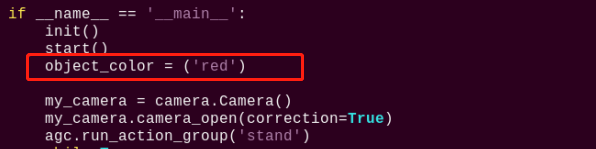
Note
After entering the code position number on the keyboard, press “Shift+G” to directly locate to the corresponding location. This section aims to introduce quick location methods, so the code position number is for reference only. Please rely on actual positions.
(4) Press “i” to enter the editing mode, then modify red in _target_color = ('red') to green.
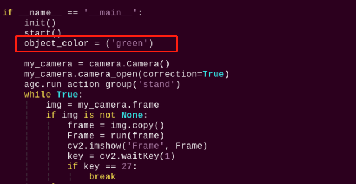
(5) Press “Esc” to enter last line command mode. Input “:wq” to save the file and exit the editor.
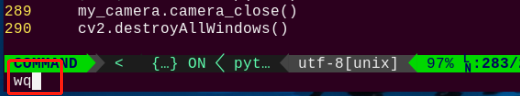
Add Recognized Color
In addition to the built-in recognized colors, you can set other recognized colors in the programming. Take orange as example:
(1) Open VNC, input command the following command to open Lab color setting document.
vim /home/pi/TonyPi/lab_config.yaml
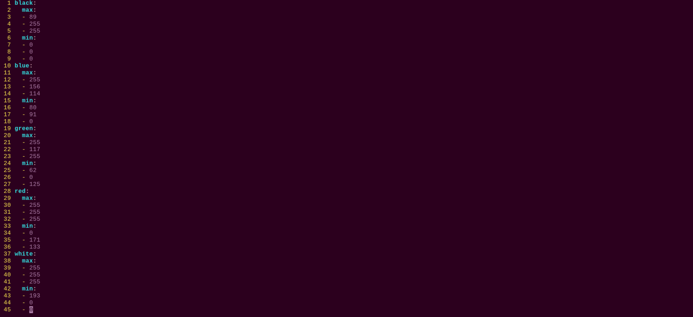
(2) Click the debugging tool icon in the system desktop. Choose “Execute” in the pop-up window.
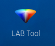
(3) Click “Connect” button in the lower left hand. When the interface display the camera returned image, the connection is successful. Select “red” in the right box first.
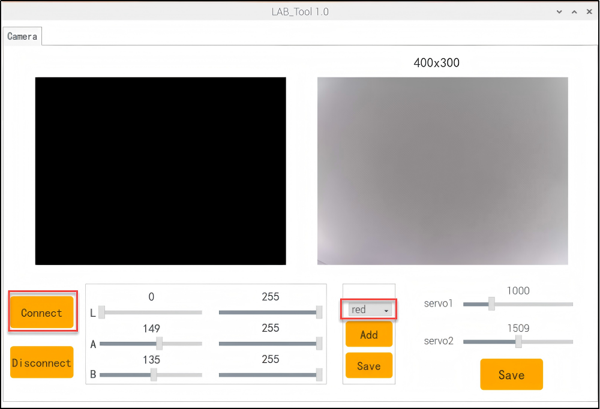
(4) Drag the corresponding sliders of L, A, and B until the color area to be recognized in the left screen becomes white and other areas become black.
For example, if you want to recognize orange, you can put the orange ball in the camera’s field of view. Adjust the corresponding sliders of L, A, and B until the blue part of the left screen becomes white and other colors become black, and then click “Save” button to keep the modified data.
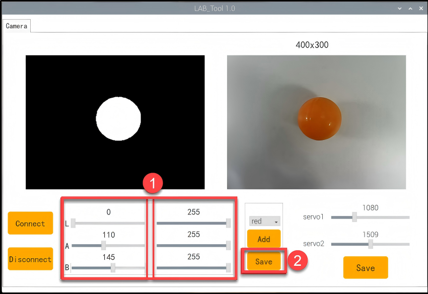
(5) After the modification is completed, check whether the modified data was successfully written in. Enter the command again to check the color setting parameters.
vim /home/pi/TonyPi/lab_config.yaml
(6) Check the data in red frame. If the edited value was written in the program, press “Esc” and enter “:wq” to save it and exit.
5.14.5 Programming Instruction
The source code of this program is locate in /home/pi/TonyPi/Functions/Follow.py.
Import Parameter Module
3 4 5 6 7 8 9 10 11 12 13 14 15 16 17 18 19 | import sys import os import cv2 import time import math import threading import numpy as np import pandas as pd import hiwonder.PID as PID import hiwonder.Camera as Camera import hiwonder.Misc as Misc import hiwonder.ros_robot_controller_sdk as rrc from hiwonder.Controller import Controller import hiwonder.ActionGroupControl as AGC import hiwonder.yaml_handle as yaml_handle from CameraCalibration.CalibrationConfig import * |
(1) import sys:Imports Python’s sys module, used to access system-related functions and variables
(2) import os:Imports Python’s os module, providing functions and methods to interact with the operating system
(3) import cv2:Imports the OpenCV library, used for image processing and computer vision-related functions
(4) import time:Imports Python’s time module, used for time-related functions such as delay operations
(5) import math:The math module provides low-level access to mathematical operations, including many commonly used math functions and constants
(6) import threading:Provides a multi-threading runtime environment
(7) import np:Imports the NumPy library, an open-source numerical computing extension for Python, used for array and matrix operations
(8) import hiwonder.TTS as TTS:Imports the speech recognition library
(9) import hiwonder.Camera as Camera:Imports the camera library
(10) from hiwonder.Misc import Misc:Imports the Misc module, used for processing recognized rectangular data
(11) import hiwonder.ros_robot_controller_sdk as rrc:Imports the robot’s low-level control library, used to control servos, motors, RGB lights, and other hardware
(12) from hiwonder.controller import Controller:Imports the motion control library
(13) import hiwonder.ActionGroupControl as AGC:Imports the action group execution library
(14) import common.yaml_handle:Includes some functions or tools related to processing YAML format files.
Color detection parameter
In the object tracking program, the detected object color is red.
289 | __target_color = ('red') |
The main detection parameters involved in the detection process are as follows:
(1) Before converting the image to the LAB color space, noise reduction processing is required. The GaussianBlur() function is used for Gaussian filtering as pictured:
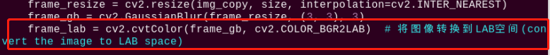
The first parameter frame_resize is inputting image.
The second parameter (3, 3) is the size of the Gaussian kernel. A larger kernel size typically results in a greater degree of filtering, making the output image more blurry, and it also increases computational complexity.
The third parameter “3” is the standard deviation of the Gaussian function along the X direction. In the Gaussian filter, it is used to control the variation near its mean. If this value is increased, the allowable range of variation around the mean is also increased; if decreased, the allowable range of variation around the mean is reduced.
(2) By using the inRange function to perform binaryzation on the input image as pictured:
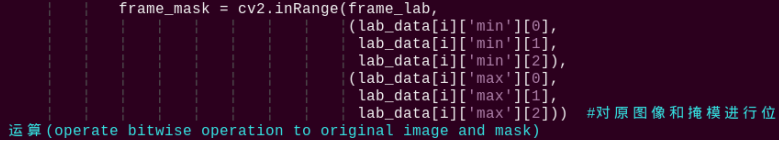
(3) To reduce interference and make the image smoother, it is necessary to perform erosion and dilation operations on the image as pictured:
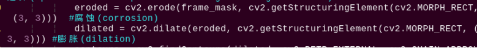
In the processing, the getStructuringElement function is used to generate structuring elements of different shapes.
The first parameter cv2.MORPH_RECT is the shape of the kernel, which is a rectangle in this case.
The second parameter (3, 3) is the size of the rectangle, which is 3x3 in this case.
(4) Find out the largest contour of the object as pictured:
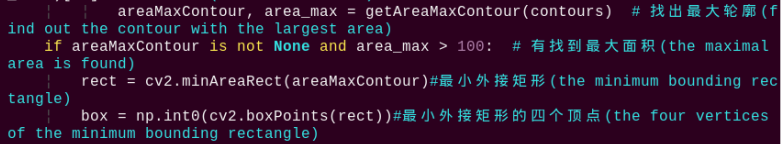
To avoid interference, the if area_max_contour is not None and area_max > 100 instruction is used to ensure that only contours with an area greater than 100 are considered valid for the largest area.
Color recognition parameter
The main control parameters involved in the color recognition process are as follows:
(1) When the robot detects a colored object, use the cv2.drawContours() function to draw the contour of the colored object as pictured:
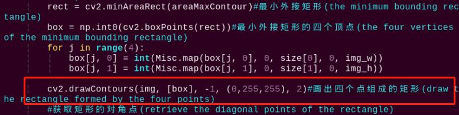
The first parameter img is inputting image.
The second parameter [box] is the contour itself, represented as a list in Python.
The third parameter -1 is the index of the contour, where the numerical value represents drawing all contours within the list.
The fourth parameter (0, 255, 255) is the contour color, with the order being B, G, R, and in this case, it represents yellow.
The fifth parameter 2 is the contour width. If set to -1, it means to fill the contour with the specified color.
(2) After the robot detects a colored object, use the cv2.circle() function to draw the center point of the colored object on the feedback screen as pictured:
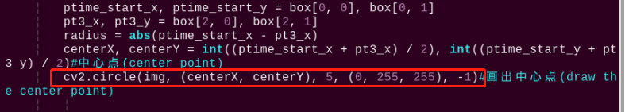
The first parameter img is the input image, which is the image of the detected colored object in this case.
The second parameter (centerX, centerY) is the coordinates of the center point of the circle to be drawn (determined based on the detected object).
The third parameter “5” is the radius of the circle to be drawn.
The fourth parameter (0, 255, 255) is the color of the circle to be drawn, with the order being B, G, R, and in this case, it represents yellow.
The fifth parameter “-1” indicates that the circle should be filled with the color specified in parameter 4. If it is a number, it represents the line width of the circle to be drawn.
Perform motion parameter
(1) After detecting a red object, control servo 1 and servo 2 of the robot to move the upper camera with the movement of the red object.
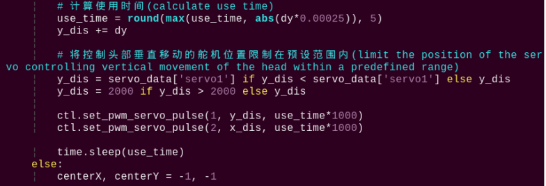
Take code ctl.set_pwm_servo_pulse(1, vertical_servo_position,use_time*1000) as example:
The first parameter “1” represents controlling servo ID 1.
The second parameter vertical_servo_position represents the pulse width of servo ID 1.
The third parameter use_time*1000 represents the movement time of the servo, in milliseconds.
(2) After detecting the red ball, the robot calls the action group file in the “/home/pi/TonyPi/ActionGroups” directory to control the robot to move along with the red object as pictured:
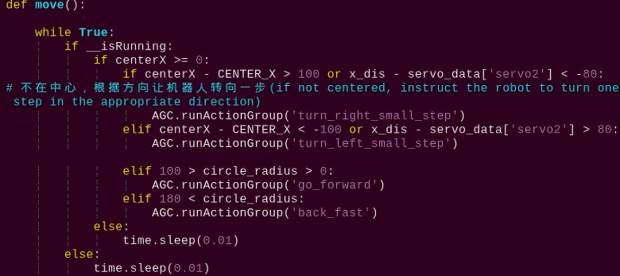